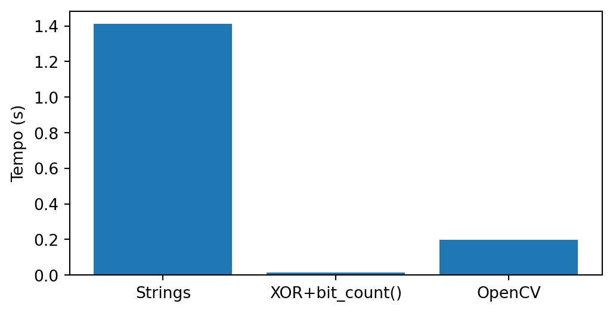
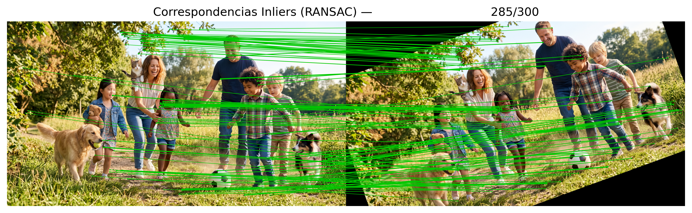
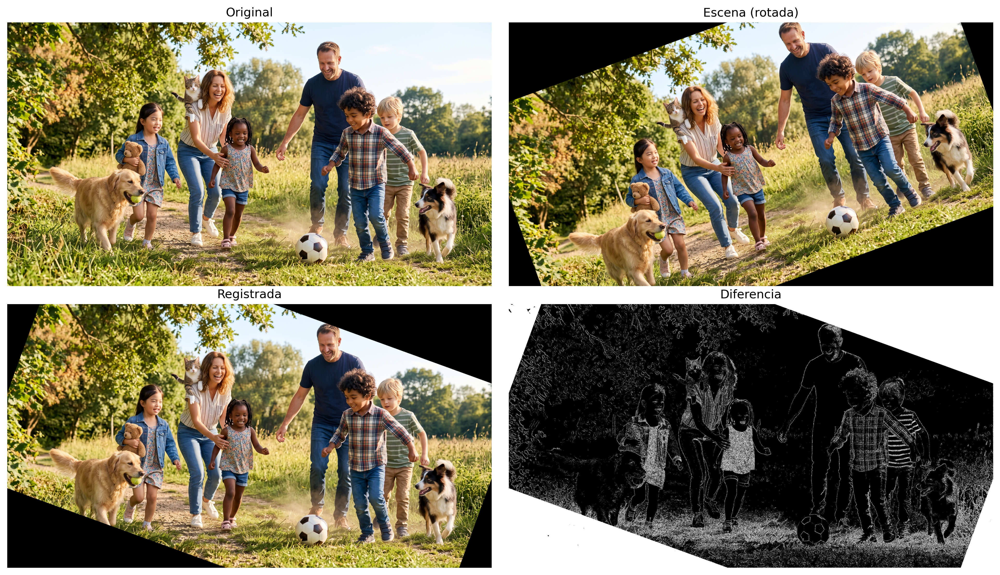
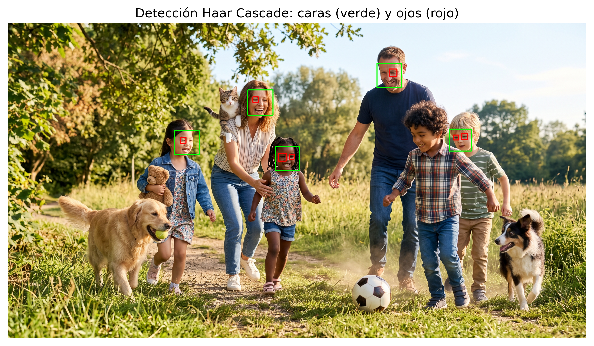
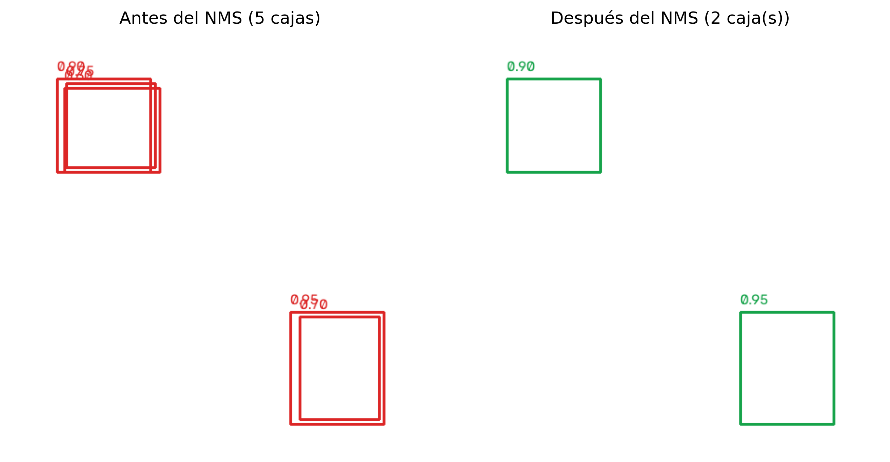
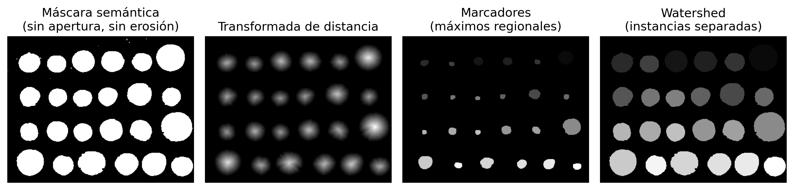

8Comprendiendo Escenas: Correspondencia de Características, Detección y Segmentación
En el Capítulo 7, se estudió cómo representar imágenes mediante descriptores y utilizar esas representaciones para tareas de clasificación. En este capítulo, el problema se amplía: además de reconocer patrones, se hace necesario establecer correspondencias entre diferentes imágenes, localizar automáticamente objetos de interés e interpretar la organización espacial de una escena.
Estos problemas constituyen algunas de las principales tareas de la Visión Computacional y representan una etapa natural después de la clasificación de imágenes. Para resolverlos, se presentarán métodos clásicos de correspondencia de características, detección de objetos y segmentación de imágenes, así como una visión general de los enfoques modernos basados en Deep Learning, preparando la transición hacia el Capítulo 9.
8.1 Objetivos del Capítulo
Al concluir este capítulo, el estudiante deberá ser capaz de:
Establecer correspondencias entre imágenes utilizando detectores y descriptores locales, estimando transformaciones geométricas mediante homografías para el registro y la corrección de perspectiva;
Localizar objetos de interés en imágenes utilizando métodos clásicos de detección y evaluar los resultados mediante métricas como la Intersection over Union (IoU) y la técnica de Non-Maximum Suppression (NMS);
Diferenciar los paradigmas de segmentación —semántica, de instancias y panóptica— comprendiendo que la segmentación panóptica unifica la segmentación semántica y la segmentación de instancias, proporcionando una descripción más completa de la escena, y aplicar métodos clásicos de segmentación;
Extraer descriptores geométricos y topológicos de objetos segmentados y exportarlos como anotaciones estructuradas (CSV o formato YOLO), validando la calidad de las anotaciones mediante la métrica IoU;
Relacionar los métodos clásicos de correspondencia, detección y segmentación con los enfoques modernos basados en Deep Learning, estudiados en el Capítulo 9.
La Figura 8.1 presenta una visión general de los principales conceptos y de las relaciones entre los temas abordados en este capítulo, sirviendo como un mapa conceptual para orientar la lectura.
Figura 8.1: Visión general de los principales conceptos abordados en este capítulo, incluyendo correspondencia de características, detección de objetos, segmentación de imágenes y sus relaciones con enfoques modernos basados en Deep Learning. Fuente: elaborado con ayuda de Gemini Notebook ({GOOGLE}, 2025).
8.2 Configuración del Entorno
import os, urllib.requesturl ="https://raw.githubusercontent.com/fzampirolli/pdi-vc/master/morph/config.py"ifnot os.path.exists("config.py"): urllib.request.urlretrieve(url, "config.py")import configconfig.setup(testsuite=True)from morph import mmfrom testsuite import TestSuiteimport importlibimport subprocessimport sysdef setup_cap08():"""Instala bibliotecas faltantes necesarias para este capítulo.""" pacotes = {"cv2": "opencv-python","skimage": "scikit-image","numpy": "numpy","sklearn": "scikit-learn","matplotlib": "matplotlib", }for mod, pkg in pacotes.items():if importlib.util.find_spec(mod) isNone: resultado = subprocess.run( [sys.executable, "-m", "pip", "install", "-q", pkg] )if resultado.returncode !=0:print(f"[AVISO] Fallo al instalar {pkg} (necesario para el módulo {mod}).")setup_cap08()import cv2import numpy as npimport matplotlib.pyplot as pltimport matplotlib.patches as patchesfrom skimage import data as skdatafrom skimage.filters import threshold_otsufrom skimage.measure import labelfrom skimage.morphology import remove_small_objects, opening, disk
8.3 Detectores y Descriptores Locales de Características
En el capítulo anterior, cada imagen fue representada por un único vector de características utilizado para clasificación. En diversas aplicaciones, sin embargo, es necesario comparar solo partes de la imagen, estableciendo correspondencias entre regiones observadas en diferentes instantes, posiciones o puntos de vista. Esta tarea requiere una representación local de la imagen, capaz de identificar estructuras suficientemente distintas para ser reencontradas en otras imágenes.
Este proceso se realiza en dos etapas complementarias. Inicialmente, un detector identifica puntos de interés (keypoints), normalmente asociados a esquinas o regiones con variaciones significativas de intensidad. A continuación, un descriptor representa numéricamente la vecindad de cada punto detectado, permitiendo comparar regiones correspondientes entre diferentes imágenes.
Una vez obtenidos los pares (punto, descriptor), la correspondencia (matching) consiste en encontrar, para cada descriptor de una imagen, el descriptor más semejante en la otra. Estas correspondencias constituyen la base de diversas aplicaciones, como registro de imágenes, reconstrucción tridimensional, navegación visual y realidad aumentada.
8.3.1 El Algoritmo ORB (Oriented FAST and Rotated BRIEF)
En este capítulo se utilizará el ORB, un detector y descriptor local que combina eficiencia computacional y robustez ante rotaciones. El algoritmo reúne tres componentes principales:
FAST (Features from Accelerated Segment Test), responsable de la detección de los puntos clave;
BRIEF (Binary Robust Independent Elementary Features), responsable de la construcción del descriptor binario;
un mecanismo de estimación de la orientación de la vecindad, que hace que el descriptor sea aproximadamente invariante a la rotación.
El detector FAST recorre todos los píxeles de la imagen. Para cada píxel candidato, analiza un círculo de 16 píxeles a su alrededor. Si un conjunto de píxeles consecutivos presenta una intensidad significativamente mayor o menor que la intensidad del píxel central, ese píxel se considera un punto clave (keypoint). A continuación, los candidatos muy cercanos se filtran, conservando solo los más representativos.
Tras la detección de los puntos clave, el descriptor BRIEF se calcula en una vecindad alrededor de cada punto clave, y no solo sobre los 16 píxeles utilizados por el FAST. En esa región, un patrón de muestreo, formado por un conjunto fijo de pares de puntos \((x,y)\) distribuidos en una ventana alrededor del punto clave, se utiliza para realizar comparaciones de intensidad según la Ecuación 8.1. En el ORB, la orientación predominante de la vecindad se estima a partir de la distribución de las intensidades en esa región, y el patrón de muestreo se rota de acuerdo con dicha orientación. Además, el ORB utiliza una versión optimizada del BRIEF, denominada rBRIEF (Rotated BRIEF), en la cual los pares de puntos se seleccionan para producir descriptores más discriminativos y con baja correlación entre sus bits.
\(x\) e \(y\) son dos puntos de la vecindad de \(p\), elegidos por el patrón de muestreo del BRIEF;
\(I(\cdot)\) representa la intensidad de un píxel;
\(\tau(p;x,y)\) es el resultado de la comparación binaria entre los puntos \(x\) e \(y\).
Cada comparación genera un bit del descriptor. La concatenación de todas estas comparaciones forma el descriptor binario asociado al punto clave.
Como el descriptor es binario, la similitud entre dos puntos se mide mediante la distancia de Hamming, correspondiente al número de bits diferentes entre dos descriptores. Esta métrica puede calcularse de forma muy eficiente mediante operaciones lógicas sobre los bits, lo que hace que el ORB sea adecuado para aplicaciones en tiempo real.
8.3.2 Explorando el Simulador del ORB
La Figura 8.3 ilustra, de forma interactiva, cómo se construye el descriptor ORB. Cada segmento representa uno de los 32 pares de puntos\((x,y)\) utilizados en la Ecuación 8.1.. El color del segmento indica el resultado de la comparación de intensidades: verde cuando \(I(x)<I(y)\) (bit igual a 1) y rojo en caso contrario (bit igual a 0). La flecha amarilla representa la orientación predominante de la vecindad, estimada a partir del centroide de intensidad. El patrón de muestreo del BRIEF se rota de acuerdo con esta orientación, haciendo que el descriptor sea aproximadamente invariante a la rotación.
Inicialmente, deje el ruido en cero y compare la secuencia de bits con el slider en 0° y luego en 15° (anote el valor del campo “Firma del Descriptor Binario” en cada caso):
En este ejemplo, ambos descriptores son idénticos, y el panel “Dist. Hamming” confirma una distancia de cero — evidencia de que la estimación de orientación está compensando correctamente la rotación de la imagen.
Ahora haga clic en “Agregar Ruido” y repita el experimento. Dado que el ruido se genera aleatoriamente en cada ejecución, los valores a continuación son solo un ejemplo — los suyos serán diferentes, pero deben presentar una distancia de Hamming de magnitud similar (típicamente entre 6 y 14 bits, de un total de 32):
El ruido altera parte de las comparaciones de intensidades, modificando algunos bits del descriptor. La diferencia entre dos descriptores se mide mediante la distancia de Hamming, que corresponde al número de posiciones en las que los bits difieren. Para los descriptores anteriores, esta distancia es igual a 10.
Una forma eficiente de calcular esta distancia en Python consiste en aplicar la operación XOR (^), que identifica los bits diferentes, seguida del método bit_count(), que contabiliza cuántos bits iguales a 1 existen en el resultado.
def hamming(a: int, b: int) ->int:return (a ^ b).bit_count()a =0b01000000001000110110011111101010b =0b10110000001011100100111111100010hamming(a, b)
10
La Figura 8.2 compara esta implementación con una versión basada en la comparación de caracteres y con la implementación optimizada de OpenCV (cv2.NORM_HAMMING).
import random, timeit, cv2, numpy as np, pandas as pdimport matplotlib.pyplot as pltBITS, N =256, 100_000A = [''.join(random.choice('01') for _ inrange(BITS)) for _ inrange(N)]B = [''.join(random.choice('01') for _ inrange(BITS)) for _ inrange(N)]Ai, Bi =map(lambda L: [int(x,2) for x in L], (A,B))Acv = np.array([[int(s[i:i+8],2) for i inrange(0,BITS,8)] for s in A], np.uint8)Bcv = np.array([[int(s[i:i+8],2) for i inrange(0,BITS,8)] for s in B], np.uint8)H = [ ("Strings", lambda: sum(sum(x!=y for x,y inzip(a,b)) for a,b inzip(A,B))), ("XOR+bit_count()", lambda: sum((a^b).bit_count() for a,b inzip(Ai,Bi))), ("OpenCV", lambda: sum(cv2.norm(a,b,cv2.NORM_HAMMING) for a,b inzip(Acv,Bcv)))]df = pd.DataFrame( [(n, timeit.timeit(f, number=1)) for n,f in H], columns=["Método","Tempo (s)"])df["Speedup"] = (df.iloc[0,1]/df["Tempo (s)"]).round(1)print(df)plt.figure(figsize=(6,3))plt.bar(df["Método"], df["Tempo (s)"])plt.ylabel("Tempo (s)")plt.show()
Método Tempo (s) Speedup
0 Strings 1.412621 1.0
1 XOR+bit_count() 0.013327 106.0
2 OpenCV 0.196665 7.2

Figura 8.2: Comparación del desempeño de diferentes implementaciones de la distancia de Hamming.
🎯 Simulador: Alineación de Orientación y BRIEF (ORB)Invariancia de Orientación en Tiempo Real
Ángulo (θ)
0°
Dist. Hamming
0
Pares Activos
32
Firma del Descriptor Binario Generada (BRIEF 32 bits):
00000000000000000000000000000000
Teste = 1 (I(A) < I(B))
Teste = 0 (I(A) ≥ I(B))
La vectorización en amarillo indica el vector centroide de la orientación estimada.
Figura 8.3: Simulador interactivo del descriptor ORB: explora la lógica de rotación y construcción del descriptor binario. Cambia la rotación para observar cómo el patrón de muestreo de pruebas binarias del BRIEF (líneas verdes y rojas) se orienta dinámicamente para garantizar la invariancia angular.
8.4 Correspondencia de Características y Homografía con ORB
Para ilustrar el proceso de correspondencia de características, se utiliza una escena sintética obtenida mediante la rotación de 20° de la imagen original. Esta transformación simula una segunda captura de la misma escena bajo otro punto de vista. La Figura 8.4 presenta la imagen de referencia y su versión rotacionada, que se utilizarán en las etapas siguientes.
Figura 8.4: Imagen original generada por Gemini y versión rotacionada (20°), simulando un cambio de punto de vista.
8.4.1 Detectando y Correspondiendo Características con ORB
Con las dos imágenes disponibles, el ORB detecta los puntos clave y calcula sus descriptores binarios. A continuación, el BFMatcher de la librería cv2 establece las correspondencias entre los descriptores utilizando la distancia de Hamming y la verificación mutua (cross-check). Finalmente, las correspondencias se ordenan de menor a mayor distancia de Hamming, priorizando los pares potencialmente más confiables. En el código siguiente, que genera la Figura 8.5, se destacan los siguientes pasos:
cv2.ORB_create(nfeatures=500) instancia el detector ORB, limitando la búsqueda a los 500 puntos clave más representativos de cada imagen. Esta restricción reduce el costo computacional y evita la selección de puntos poco distintivos.
orb.detectAndCompute(...) ejecuta, en una sola llamada, la detección de los puntos clave mediante el FAST y el cálculo de los descriptores mediante el BRIEF orientado, devolviendo la lista de puntos clave (kp) y sus descriptores binarios de 256 bits (des).
cv2.BFMatcher(cv2.NORM_HAMMING, crossCheck=True) crea un comparador por fuerza bruta (Brute-Force Matcher), que utiliza la distancia de Hamming —la misma métrica explorada en la Figura 8.3— para comparar cada descriptor de la imagen original con todos los descriptores de la imagen rotada. El parámetro crossCheck=True conserva únicamente los pares en los que la mejor correspondencia es recíproca, es decir, cuando el mejor correspondiente de A es B y, simultáneamente, el mejor correspondiente de B es A. Este criterio elimina gran parte de las correspondencias ambiguas.
matches = sorted(...) ordena las correspondencias de menor a mayor distancia de Hamming. Cuanto menor sea esta distancia, mayor será la similitud entre los descriptores y, en consecuencia, mayor será la probabilidad de que la correspondencia sea correcta.
La Figura 8.5 presenta solo las cinco correspondencias con menor distancia de Hamming. Aunque estos pares son los más prometedores, todavía no existe ninguna restricción geométrica entre los puntos correspondientes. Como consecuencia, algunos enlaces pueden representar falsas correspondencias (false matches), lo que justifica el uso del RANSAC en la etapa siguiente para identificar únicamente las correspondencias geométricamente consistentes.
orb = cv2.ORB_create(nfeatures=500)kp1, des1 = orb.detectAndCompute(img_original, None)kp2, des2 = orb.detectAndCompute(img_cena, None)print(f"Puntos de interés detectados: {len(kp1)} (original), {len(kp2)} (escena)")bf = cv2.BFMatcher(cv2.NORM_HAMMING, crossCheck=True)matches =sorted( bf.match(des1, des2), key=lambda m: m.distance)print(f"Correspondencias encontradas: {len(matches)}")def draw_matches_destacado(img1, kp1, img2, kp2, matches, espessura=2, raio_ponto=4, seed=42, cor_fixa=None):"""Dibuja las imágenes lado a lado con líneas conectando los puntos correspondientes. Si cor_fija=None, cada correspondencia recibe un color aleatorio (facilita distinguir enlaces individuales). Si cor_fija está definida (ej: verde), todas las líneas usan el mismo color — útil para resaltar un subconjunto específico, como los inliers del RANSAC. """ h1, w1 = img1.shape[:2] h2, w2 = img2.shape[:2] h =max(h1, h2) canvas = np.zeros((h, w1 + w2, 3), dtype=np.uint8) canvas[:h1, :w1] = cv2.cvtColor(img1, cv2.COLOR_GRAY2BGR) if img1.ndim ==2else img1 canvas[:h2, w1:w1+w2] = cv2.cvtColor(img2, cv2.COLOR_GRAY2BGR) if img2.ndim ==2else img2 rng = np.random.RandomState(seed) # semilla fija = colores reproducibles en cada ejecuciónfor m in matches: pt1 =tuple(np.round(kp1[m.queryIdx].pt).astype(int)) pt2 =tuple(np.round(kp2[m.trainIdx].pt).astype(int) + np.array([w1, 0])) cor = cor_fixa if cor_fixa isnotNoneelse\tuple(int(c) for c in rng.randint(60, 256, size=3)) cv2.line(canvas, pt1, pt2, cor, espessura, lineType=cv2.LINE_AA) cv2.circle(canvas, pt1, raio_ponto, cor, -1, lineType=cv2.LINE_AA) cv2.circle(canvas, pt2, raio_ponto, cor, -1, lineType=cv2.LINE_AA)return canvas# prueba las 5 peores: matches[-5:]img_matches = draw_matches_destacado( img_original, kp1, img_cena, kp2, matches[:5], espessura=10, raio_ponto=15)mm.show([img_matches], titles=["Top 5 Correspondencias ORB"], cols=1, figsize=(10, 5))
Puntos de interés detectados: 500 (original), 500 (escena)
Correspondencias encontradas: 300
Figura 8.5: Las 5 mejores correspondencias de características ORB entre la imagen original y la escena sintética, antes del filtrado por RANSAC.
La función draw_matches_destacado() tiene únicamente fines de visualización: posiciona las imágenes lado a lado y dibuja líneas entre los pares correspondientes, sin interferir en la estimación de las correspondencias.
8.5 Modelagem Matemática: Homografía y RANSAC
8.5.1 Homografía
En los Ejercicios 10 y 11 del Capítulo 2, las funciones cv2.getPerspectiveTransform y cv2.warpPerspective se utilizaron para corregir la perspectiva de imágenes a partir de cuatro pares de puntos correspondientes informados manualmente. En este capítulo, estas correspondencias pasan a obtenerse automáticamente mediante ORB, lo que permite estimar la transformación entre dos imágenes sin intervención del usuario.
Matemáticamente, esta transformación se describe mediante una homografía, representada por una matriz \(3\times3\) que relaciona las coordenadas de un mismo plano observado desde diferentes puntos de vista:
Tras la normalización de las coordenadas homogéneas, se obtiene el punto correspondiente
\[
\left(\frac{x'}{w'},\frac{y'}{w'}\right).
\]
Como la homografía se define salvo un factor de escala, posee ocho grados de libertad. En consecuencia, se necesitan, como mínimo, cuatro pares de puntos correspondientes para estimar sus parámetros.
En la práctica, sin embargo, las correspondencias producidas automáticamente por ORB pueden contener asociaciones incorrectas (outliers). Para estimar la homografía de manera confiable incluso en presencia de estos errores, se utiliza el algoritmo RANSAC, presentado en la siguiente sección.
8.5.2 RANSAC
El RANSAC (Random Sample Consensus) es un algoritmo de estimación robusta capaz de ajustar un modelo geométrico incluso en presencia de observaciones incorrectas (outliers). En este capítulo, el modelo de interés es una homografía, estimada a partir de las correspondencias producidas por el ORB.
En cada iteración, el algoritmo:
selecciona aleatoriamente un pequeño subconjunto de correspondencias (cuatro pares de puntos, en el caso de la homografía);
estima una homografía candidata a partir de ese subconjunto;
verifica cuáles correspondencias son compatibles con esa transformación, clasificándolas como inliers o outliers;
registra la homografía que produce el mayor número de inliers;
reestima la homografía utilizando únicamente los inliers encontrados.
Aunque el ejemplo de este capítulo utilice una homografía, el RANSAC es un algoritmo de propósito general y puede emplearse para estimar diversos modelos geométricos, como rectas, circunferencias, planos y otras transformaciones. En todos los casos, el principio es el mismo: generar modelos candidatos a partir de pequeñas muestras aleatorias y seleccionar aquel que presente el mayor consenso entre los datos.
Para comprender este proceso de forma gradual, se presentan dos simuladores.
El primero, mostrado en la Figura 8.6, utiliza el ejemplo más simple posible: el ajuste de una recta a un conjunto de puntos que contiene aproximadamente 25% de outliers. El objetivo es comprender las etapas fundamentales del algoritmo — muestrear, estimar un modelo, identificar los inliers y repetir el proceso — sin la complejidad del registro entre imágenes.
🎯 Simulador: RANSAC — Ajuste de Recta Robusto a OutliersDatos con ~25% de correspondencias espurias
Umbral (px)
15
Inliers
–
Outliers
–
Iteraciones
–
Puntos (no clasificados)
Inliers
Outliers
Figura 8.6: Simulador interactivo del algoritmo RANSAC: ajuste el umbral de distancia y ejecute el algoritmo para observar la separación entre inliers y outliers.
El segundo simulacro, presentado en la Figura 8.7, se aproxima al problema estudiado en este capítulo. En lugar de un único conjunto de puntos, se consideran dos imágenes que contienen correspondencias entre puntos clave. Algunas correspondencias son correctas (inliers), mientras que otras son incorrectas (outliers), resultantes de errores en el proceso de correspondencia de los descriptores. En este simulador, el modelo estimado es una transformación de similitud (rotación, escala y traslación), más simple que una homografía completa, pero suficiente para ilustrar el problema de registro entre imágenes.
En ambos simuladores, el algoritmo ejecutado sigue exactamente el mismo principio utilizado posteriormente para estimar la homografía. La única diferencia radica en el modelo geométrico ajustado.
Ajuste el umbral de distancia y ejecute el algoritmo en cada simulador para observar cómo el RANSAC identifica los inliers, descarta los outliers y estima un modelo consistente utilizando únicamente las correspondencias válidas.
🧩 Simulador: RANSAC — Registro por Correspondencia de Puntos~30% de correspondencias espurias (falsos matches)
Umbral (px)
12
Inliers
–
Outliers
–
Iteraciones
–
Puntos clave
No clasificado
Inlier
Outlier
Figura 8.7: Simulador interactivo de RANSAC aplicado al registro de imágenes: los puntos clave de dos imágenes se emparejan mediante un descriptor, algunas correspondencias son espurias (valores atípicos), y RANSAC estima la transformación de similitud que alinea la mayoría de ellas.
8.5.3 Estimando la Homografía con RANSAC
Tras obtener las correspondencias entre los puntos clave mediante ORB, el siguiente paso consiste en estimar la homografía entre las dos imágenes. Para ello, se utiliza la función cv2.findHomography(), que emplea el algoritmo RANSAC para calcular esta transformación y devolver una máscara que indica cuáles correspondencias fueron clasificadas como inliers.
El siguiente código realiza cuatro operaciones principales:
extrae las coordenadas de los puntos correspondientes en cada imagen;
estima la homografía mediante cv2.findHomography(..., cv2.RANSAC);
recibe la máscara producida por el RANSAC, en la cual cada correspondencia se clasifica como inlier o outlier;
utiliza esta máscara para seleccionar únicamente las correspondencias clasificadas como inliers.
La Figura 8.8 presenta solo las correspondencias clasificadas como inliers. Se observa que estos pares de puntos son compatibles con una misma transformación geométrica, mientras que las correspondencias inconsistentes (outliers) se descartan. Como consecuencia, la homografía estimada representa de forma más fiel la relación geométrica entre las dos imágenes.
pts1 = np.float32([kp1[m.queryIdx].pt for m in matches])pts2 = np.float32([kp2[m.trainIdx].pt for m in matches])H, mascara_inliers = cv2.findHomography(pts1, pts2, cv2.RANSAC, ransacReprojThreshold=5.0)n_inliers =int(mascara_inliers.sum())print(f"Matriz de homografía estimada:\n{H}\n")print(f"Inliers: {n_inliers} de {len(matches)} correspondencias \ ({100*n_inliers/len(matches):.1f}%)")matches_inliers = [m for m, ok inzip(matches, mascara_inliers.ravel()) if ok]img_inliers = draw_matches_destacado( img_original, kp1, img_cena, kp2, matches_inliers, espessura=2, raio_ponto=4, cor_fixa=(0, 200, 0) # verde (BGR))mm.show([img_inliers], titles=[f"Correspondencias Inliers (RANSAC) — \{n_inliers}/{len(matches)}"], cols=1, figsize=(10, 5))
Matriz de homografía estimada:
[[ 9.39407240e-01 3.41706397e-01 -1.77390658e+02]
[-3.41929137e-01 9.39717641e-01 5.27534018e+02]
[-1.12175998e-07 -4.86089683e-08 1.00000000e+00]]
Inliers: 285 de 300 correspondencias (95.0%)

Figura 8.8: Correspondencias clasificadas como inliers (verde) por RANSAC al estimar la homografía entre las dos imágenes.
8.5.4 Registro de la Imagen
Tras estimar la homografía, el siguiente paso consiste en utilizarla para registrar la imagen de la escena en el sistema de coordenadas de la imagen original. Este proceso permite alinear las dos imágenes, facilitando la comparación entre ellas.
El código realiza tres operaciones principales:
aplica la transformación proyectiva mediante cv2.warpPerspective(), utilizando la opción cv2.WARP_INVERSE_MAP, que aplica internamente la transformación inversa sin necesidad de calcular explícitamente \(H^{-1}\);
calcula la diferencia absoluta píxel a píxel entre la imagen registrada y la imagen original mediante cv2.absdiff();
muestra la imagen original, la escena rotada, la imagen registrada y un mapa de las diferencias entre las dos imágenes.
La Figura 8.9 presenta el resultado del registro. Se observa que la imagen registrada se vuelve visualmente muy similar a la imagen original, lo que indica que la homografía estimada logró alinear correctamente las dos vistas de la misma escena. El mapa de diferencias evidencia solo las regiones donde aún existen pequeñas discrepancias derivadas de errores de interpolación, cuantización y de la propia estimación de la homografía.
h, w = img_original.shape[:2]# WARP_INVERSE_MAP: aplica H "de atrás hacia adelante", evitando el cálculo manual de H^-1img_registrada = cv2.warpPerspective(img_cena, H, (w, h), flags=cv2.WARP_INVERSE_MAP)erro = cv2.absdiff(img_original, img_registrada)mm.show( # muestra mm.gray(erro)>10 en niveles de gris [img_original, img_cena, img_registrada, mm.gray(erro)>10], titles=["Original", "Escena (rotada)", "Registrada", "Diferencia"], cols=2, figsize=(14, 8),)

Figura 8.9: Registro de la imagen de la escena utilizando la homografía inversa estimada por RANSAC.
Nota🧠 ¿Por qué funciona? — Robustez por consenso
Muchos métodos de estimación ajustan un modelo utilizando todas las observaciones disponibles, buscando minimizar el error total entre los datos observados y el modelo ajustado (enfoque conocido como mínimos cuadrados). Cuando existen outliers, esas observaciones incorrectas pueden desplazar significativamente el resultado obtenido.
El RANSAC sigue una estrategia diferente. En lugar de utilizar todos los datos simultáneamente, estima modelos sucesivos a partir de pequeñas muestras aleatorias. Cada modelo se evalúa entonces por el número de correspondencias compatibles con él. Al final de las iteraciones, se selecciona el modelo que presenta el mayor consenso entre los datos, es decir, el mayor número de inliers.
Dos parámetros desempeñan un papel fundamental en el algoritmo:
el umbral de reproyección, que define la distancia máxima para que una correspondencia sea clasificada como inlier;
el número de iteraciones, que debe ser suficientemente grande para aumentar la probabilidad de seleccionar al menos una muestra libre de outliers.
Aunque bastante robusto, el RANSAC presupone que existe un modelo geométrico predominante en los datos. Su desempeño tiende a disminuir cuando la proporción de inliers es muy pequeña o cuando diferentes estructuras geométricas coexisten en la misma escena, dificultando la identificación de un único modelo dominante.
8.6 Detección de Objetos: Haar Cascade (Viola-Jones)
La correspondencia de características responde a la pregunta: “¿dónde está el mismo objeto o patrón observado anteriormente?”. La detección de objetos resuelve un problema más general: localizar automáticamente instancias de una categoría (por ejemplo, rostros humanos), incluso si los objetos específicos nunca han sido observados durante el entrenamiento. Mientras que el ORB necesita dos imágenes para establecer correspondencias entre puntos, el Haar Cascade opera sobre una sola imagen, identificando directamente las regiones candidatas a contener el objeto buscado.
El algoritmo Haar Cascade, propuesto por Viola y Jones [Viola; Jones (2001); Viola (2004)], combina características Haar, imágenes integrales y una cascada de clasificadores para realizar la detección de objetos de manera eficiente. Aunque actualmente existen métodos más recientes basados en redes neuronales convolucionales, el Haar Cascade permanece disponible en la biblioteca OpenCV y constituye un ejemplo clásico para el estudio de técnicas de detección de objetos.
Su funcionamiento se basa en tres componentes principales:
Características Haar: filtros rectangulares simples que miden diferencias de intensidad entre regiones vecinas de la imagen, explotando patrones de contraste característicos del objeto, como la región de los ojos generalmente más oscura que la frente;
Imagen integral: estructura de datos que permite calcular rápidamente la suma de los píxeles de cualquier región rectangular de la imagen: \[
I_{\text{integral}}(x,y)=\sum_{x'\le x,\;y'\le y}I(x',y'),
\] reduciendo significativamente el costo computacional de la evaluación de las características Haar. Con esta estructura, la suma de los píxeles de cualquier rectángulo puede obtenerse con solo cuatro accesos a la imagen integral;
Cascada de clasificadores: durante el entrenamiento, el algoritmo AdaBoost selecciona y combina clasificadores simples en una secuencia de etapas. En la detección, las regiones que claramente no corresponden al objeto se descartan desde las primeras etapas, mientras que solo las candidatas más prometedoras pasan por las etapas siguientes, más precisas y computacionalmente más costosas. Esta estrategia permite realizar una búsqueda eficiente en diferentes posiciones y escalas de la imagen.
El siguiente código, que genera la Figura 8.10, utiliza clasificadores entrenados previamente y disponibles en OpenCV para detectar rostros y, a continuación, restringe la búsqueda de ojos solo al interior de cada rostro detectado. Esta estrategia reduce falsos positivos y disminuye el costo computacional, ya que evita realizar la búsqueda de ojos en toda la imagen.
Durante la detección, una ventana recorre la imagen en diferentes posiciones y escalas. La función detectMultiScale() realiza esta búsqueda automáticamente. El parámetro scaleFactor controla el factor de reducción entre escalas consecutivas de la ventana, mientras que minNeighbors define el número mínimo de detecciones vecinas necesarias para confirmar un objeto, reduciendo detecciones espurias. El parámetro minSize establece el tamaño mínimo del objeto considerado durante la búsqueda.
La función devuelve una lista de rectángulos, cada uno descrito por las coordenadas de la esquina superior izquierda y las dimensiones (x, y, ancho, alto). Estos rectángulos delimitan las regiones clasificadas como objetos por el detector y se utilizan para dibujar las cajas mostradas en la Figura 8.10.
def get_cascade(nome):"""Descarga (si es necesario) y carga un clasificador Haar Cascade de OpenCV.""" caminho =f"haarcascades/{nome}" os.makedirs("haarcascades", exist_ok=True)ifnot os.path.exists(caminho): url =f"https://raw.githubusercontent.com/opencv/opencv/master/data/haarcascades/{nome}" urllib.request.urlretrieve(url, caminho)return cv2.CascadeClassifier(caminho)# Más utilizado#face_cascade = get_cascade("haarcascade_frontalface_default.xml")# Más preciso, aunque más lentoface_cascade = get_cascade("haarcascade_frontalface_alt2.xml")# Compromiso entre velocidad y precisión#face_cascade = get_cascade("haarcascade_frontalface_alt.xml")# Muy rápido, aunque menos preciso#face_cascade = get_cascade("haarcascade_frontalface_alt_tree.xml")# para los ojos, más utilizado#eye_cascade = get_cascade("haarcascade_eye.xml")eye_cascade = get_cascade("haarcascade_eye_tree_eyeglasses.xml")img_original = mm.read(caminho_local)# Escala de grises + ecualización de histograma (Capítulo 3), como espera Haar Cascadeimg_rgb = mm.rotate(img_original, angle=0)img_gray = cv2.equalizeHist(cv2.cvtColor(img_rgb, cv2.COLOR_RGB2GRAY))# Detecta caras y, dentro de cada una, intenta detectar los ojosfaces = face_cascade.detectMultiScale( img_gray, scaleFactor=1.1, # Pasos más grandes entre escalas: más rápido, pero menos sensible minNeighbors=3, # Nº mínimo de detecciones superpuestas para confirmar una cara minSize=(90, 90) # Ignora regiones candidatas menores de 30×30 px)img_anotada = img_rgb.copy()for (x, y, w, h) in faces: cv2.rectangle(img_anotada, (x, y), (x + w, y + h), (0, 255, 0), 3) olhos = eye_cascade.detectMultiScale( img_gray[y:y+h, x:x+w], scaleFactor=1.02, minNeighbors=4, minSize=(15, 15) )for (ex, ey, ew, eh) in olhos: cv2.rectangle(img_anotada, (x+ex, y+ey), (x+ex+ew, y+ey+eh), (255, 0, 0), 4)print(f"Regiones detectadas como cara: {len(faces)}")mm.show([img_anotada], titles= ["Detección Haar Cascade: caras (verde) y ojos (rojo)"], cols=1, figsize=(8, 8))
Regiones detectadas como cara: 5

Figura 8.10: Detección de caras y ojos con Haar Cascade.
Nota🧠 ¿Por qué funciona? — Y por qué también falla
En la imagen utilizada en este ejemplo, el clasificador detecta la cara y los ojos, pero también puede marcar una segunda región sobre parte del fondo de la imagen como si fuera una cara. Este es un ejemplo de falso positivo: la distribución local de intensidades en esa región es suficientemente similar a los patrones aprendidos durante el entrenamiento como para que la cascada la clasifique incorrectamente como un rostro.
Este comportamiento evidencia una de las principales limitaciones del Haar Cascade. Como el método basa su decisión únicamente en características Haar, es decir, diferencias de intensidad entre regiones rectangulares, no representa explícitamente la forma ni el significado de los objetos presentes en la imagen. Así, texturas y patrones de contraste similares a los encontrados en caras pueden producir detecciones incorrectas. Además, su rendimiento tiende a disminuir ante grandes variaciones de pose, oclusiones, expresiones faciales y condiciones de iluminación diferentes de las presentes en los datos utilizados para el entrenamiento.
A pesar de estas limitaciones, el Haar Cascade sigue siendo útil en aplicaciones que priorizan un bajo costo computacional. En situaciones que requieren una mayor capacidad de generalización ante variaciones en la apariencia de los objetos, los métodos modernos basados en redes neuronales profundas suelen presentar un mejor rendimiento.
8.7 Detecção de Objetos: Caixas Delimitadoras, IoU e NMS
Aunque los métodos de detección de objetos utilizan estrategias bastante diferentes — desde Haar Cascade hasta los detectores modernos basados en redes neuronales profundas —, sus resultados se representan normalmente mediante cajas delimitadoras (bounding boxes), definidas por las coordenadas \((x_{min}, y_{min}, x_{max}, y_{max})\).
8.7.1Intersection over Union (IoU)
La métrica Intersection over Union (IoU) cuantifica la superposición entre dos cajas delimitadoras, por ejemplo, la detección producida por un algoritmo y la anotación de referencia (ground truth):
Cuanto más cercano a 1, mayor es la concordancia entre las cajas; el valor 0 indica ausencia de superposición. En evaluaciones de detectores de objetos, es común considerar una detección correcta cuando \(\mathrm{IoU}\ge0{,}5\), aunque aplicaciones específicas pueden adoptar umbrales diferentes.
La métrica IoU no se utiliza únicamente para evaluar detectores. También constituye el criterio empleado por el algoritmo de Supresión de No-Máximos para decidir cuándo dos cajas delimitadoras representan el mismo objeto y, por lo tanto, una de ellas debe ser eliminada.
8.7.2 Supresión de No-Máximos (NMS)
Durante la detección, es común que varias cajas delimitadoras estén asociadas al mismo objeto. La Supresión de No-Máximos (Non-Maximum Suppression, NMS) elimina esta redundancia en tres etapas:
ordena las detecciones por la puntuación de confianza, de mayor a menor;
mantiene la caja de mayor confianza y elimina aquellas cuyo IoU con ella supera un umbral determinado;
repite el proceso con las cajas restantes hasta que no existan superposiciones relevantes.
El ejemplo de la Figura 8.11 ilustra este procedimiento con dos objetos, cada uno representado inicialmente por varias cajas superpuestas. En este ejemplo, cada caja delimitadora recibe una puntuación de confianza, que representa el grado de confianza del detector de que esa región contiene el objeto buscado.
En lugar de implementar el algoritmo manualmente, se utiliza la función cv2.dnn.NMSBoxes, que implementa la Supresión de No-Máximos empleada en diversos detectores modernos. La función desenhar_caixas muestra, lado a lado, las cajas antes y después del NMS, evidenciando la reducción de cinco detecciones a solo dos, preservando únicamente la caja de mayor confianza para cada objeto.
def desenhar_caixas(caixas, pontuacoes, indices, cor, tamanho=(450, 450)):"""Dibuja las cajas (y sus puntuaciones) indicadas en `indices` sobre un fondo blanco.""" tela = np.full((tamanho[1], tamanho[0], 3), 255, dtype=np.uint8)for i in indices: x0, y0, x1, y1 = caixas[i] cv2.rectangle(tela, (x0, y0), (x1, y1), cor, 2) cv2.putText(tela, f"{pontuacoes[i]:.2f}", (x0, y0 -8), cv2.FONT_HERSHEY_SIMPLEX, 0.5, cor, 1, cv2.LINE_AA)return telacaixas = np.array([ [50, 50, 150, 150], [60, 55, 155, 145], [58, 60, 160, 150], [300, 300, 400, 420], [310, 305, 395, 415],])pontuacoes = np.array([0.90, 0.75, 0.60, 0.95, 0.70])# cv2.dnn.NMSBoxes espera cajas en el formato (x, y, ancho, alto)caixas_xywh = np.column_stack([ caixas[:, 0], caixas[:, 1], caixas[:, 2] - caixas[:, 0], caixas[:, 3] - caixas[:, 1]])mantidas = cv2.dnn.NMSBoxes( bboxes=caixas_xywh.tolist(), scores=pontuacoes.tolist(), score_threshold=0.0, # ningún recorte por confianza mínima aquí nms_threshold=0.5# umbral de IoU para considerar dos cajas redundantes).flatten()img_antes = desenhar_caixas(caixas, pontuacoes, range(len(caixas)), cor=(220, 38, 38))img_depois = desenhar_caixas(caixas, pontuacoes, mantidas, cor=(22, 163, 74))mm.show( [img_antes, img_depois], titles=[f"Antes del NMS ({len(caixas)} cajas)", \f"Después del NMS ({len(mantidas)} caja(s))"], cols=2, figsize=(9, 4.5))

Figura 8.11: Efecto de la Supresión de No-Máximos (NMS): múltiples detecciones redundantes (izquierda) se reducen a una detección por objeto (derecha).
Nota🧠 ¿Por qué funciona? — Eliminación de redundancias
El NMS (Non-Maximum Suppression) no altera la calidad de las detecciones producidas por el detector. Su función es eliminar cajas delimitadoras redundantes que representan al mismo objeto, conservando únicamente aquella con mayor puntuación de confianza.
Su eficacia depende del umbral de IoU adoptado. Un valor muy bajo puede eliminar cajas correspondientes a objetos diferentes cuya superposición sea elevada, mientras que un valor muy alto puede mantener varias cajas superpuestas para un mismo objeto.
El NMS tampoco elimina falsos positivos aislados. Si una región incorrecta es detectada por una sola caja, esta se conservará, ya que no existe otra detección redundante con la cual compararla. Por este motivo, el NMS se aplica como una etapa de posprocesamiento, utilizando únicamente las cajas delimitadoras y sus puntuaciones de confianza producidas por el detector.
8.8 Segmentación Visual: Semántica, de Instancias y Panóptica
Una caja delimitadora indica aproximadamente la posición de un objeto, pero no identifica qué píxeles le pertenecen. La segmentación visual resuelve este problema asignando una etiqueta a cada píxel de la imagen. Según la información producida, se distinguen tres paradigmas principales, resumidos en la Tabla 8.1.
Tabla 8.1: Comparación entre los principales paradigmas de segmentación visual.
Paradigma
Pregunta que responde
¿Distingue objetos de la misma clase?
Semántica
“¿A qué clase pertenece cada píxel?”
No. Todos los píxeles de una misma clase reciben la misma etiqueta.
De instancias
“¿Qué píxeles pertenecen a cada objeto individual?”
Sí. Cada objeto recibe un identificador propio.
Panóptica
Combina las dos anteriores.
Sí. Cada píxel recibe una clase y, cuando corresponde, un identificador de instancia.
En la segmentación semántica, cada píxel recibe únicamente la etiqueta de su clase. En la segmentación de instancias, además de la clase, objetos distintos pertenecientes a la misma categoría se diferencian entre sí. Por su parte, la segmentación panóptica combina estas dos informaciones, asignando a cada píxel una clase y, cuando corresponde, un identificador de instancia.
8.8.1 Segmentación Semántica por Umbralización
Antes de la popularización de los métodos basados en redes neuronales profundas —tema del Capítulo 9—, muchas aplicaciones de segmentación se resolvían mediante técnicas clásicas de procesamiento de imágenes. Uno de los ejemplos más sencillos consiste en separar objeto y fondo mediante umbralización, produciendo una máscara binaria. Esta máscara caracteriza una segmentación semántica, pues cada píxel pasa a pertenecer a una de las dos clases: moneda o fondo.
La Figura 8.12 utiliza la imagen de monedas de la biblioteca scikit-image. Este ejemplo retoma los conceptos de umbralización y morfología matemática estudiados en el Capítulo 4, en sustitución del ejemplo anterior, que utilizaba otra imagen de monedas.
Inicialmente, se aplica un cierre morfológico para suavizar pequeñas imperfecciones en la superficie de las monedas. A continuación, la umbralización de Otsu produce la máscara binaria que separa monedas y fondo. Tras la eliminación de los objetos conectados al borde de la imagen, el relleno de regiones internas y la eliminación de pequeños ruidos mediante operaciones morfológicas, se obtiene una máscara semántica adecuada para las etapas siguientes.
8.8.2 Segmentación de Instancias por Etiquetado
Una máscara semántica informa únicamente la clase de cada píxel, pero no distingue objetos diferentes pertenecientes a la misma categoría. Para obtener una segmentación de instancias, se aplica el etiquetado de componentes conectados, que asigna un identificador diferente a cada región conexa de la máscara binaria.
En este ejemplo, cada componente conectado corresponde a una moneda individual. Así, el etiquetado produce una segmentación de instancias, permitiendo identificar, contar y medir por separado cada moneda presente en la imagen.
img_moedas = skdata.coins()# 1. Cierre morfológico: suaviza bordes y rellena pequeñas fallas en la# superficie de las monedas antes de la umbralizaciónfechamento = mm.close(img_moedas, mm.sedisk(4))# 2. Umbralización de Otsu (Capítulo 4): separa monedas (claras) del fondo (oscuro)mascara_bruta = mm.threshold(fechamento)# 3. Elimina objetos conectados al borde de la imagen — monedas cortadas en las# extremidades no forman instancias completas y dificultarían el conteomascara_sem_borda = mm.edgeoff(mascara_bruta)# 4. Cierre de agujeros: rellena posibles regiones internas no detectadas# por el umbral, garantizando que cada moneda sea un disco sólidomascara_semantica = mm.clohole(mascara_sem_borda)# 5. Apertura morfológica: elimina ruido residual y desconecta monedas que# por casualidad se tocan, preparando la máscara para el Etiquetadomascara_limpa = mm.open(mascara_semantica, mm.sedisk(6))# 6. Etiquetado de componentes conectados: cada moneda aislada recibe un# identificador de instancia distintorotulos_instancias = mm.label(mascara_limpa)print(f"Instancias (monedas individuales) identificadas: {np.max(rotulos_instancias)}")mm.show( [img_moedas, mascara_bruta, mascara_sem_borda, mascara_semantica, mascara_limpa, rotulos_instancias], titles=["Original","1. Umbralización (Otsu)","2. Eliminación de bordes","3. Relleno de agujeros\n(máscara semántica: moneda x fondo)","4. Apertura (limpieza)","5. Etiquetado\n(segmentación de instancias)" ], cols=3, figsize=(10, 6))
Figura 8.12: Segmentación clásica (no basada en aprendizaje profundo): máscara semántica (moneda x fondo) mediante umbralización de Otsu, y segmentación de instancias mediante etiquetado de componentes conectados.
Nota🧠 ¿Por qué funciona? — Y dónde el enfoque clásico encuentra limitaciones
En este ejemplo, la segmentación se facilita por el contraste entre las monedas y el fondo, así como por la relativa homogeneidad de intensidad en el interior de cada moneda. La umbralización de Otsu separa eficientemente estas dos regiones, mientras que las operaciones morfológicas eliminan pequeñas imperfecciones de la máscara binaria. Finalmente, el etiquetado de componentes conectados asigna un identificador distinto a cada región conexa, produciendo una segmentación de instancias.
Esta estrategia, sin embargo, depende directamente de la calidad de la máscara binaria. Si dos objetos están unidos, superpuestos o presentan un contraste insuficiente respecto al fondo, pueden ser representados por una única región o dejar de ser segmentados correctamente. Además, los métodos basados predominantemente en la intensidad de los píxeles tienen una capacidad limitada para distinguir objetos de diferentes clases con apariencia similar.
Los métodos modernos de segmentación basados en redes neuronales profundas aprenden representaciones visuales directamente a partir de los datos de entrenamiento, lo que generalmente les confiere una mayor capacidad para manejar variaciones de iluminación, textura, forma y oclusión. La segmentación panóptica amplía este enfoque al combinar, en una única representación, la clasificación semántica de todos los píxeles y la identificación individual de los objetos presentes en la escena.
8.8.3 Alternativa: Transformada de Distancia + Watershed
La apertura morfológica puede separar monedas que se tocan mediante la erosión de la máscara binaria. Sin embargo, esta operación modifica el contorno de todos los objetos, incluidos aquellos que ya estaban aislados. Una alternativa, presentada en el Capítulo 4, consiste en combinar la transformada de distancia con el algoritmo watershed, utilizando marcadores obtenidos a partir de la propia máscara binaria.
El procedimiento se realiza en tres etapas:
se calcula la transformada de distancia de la máscara binaria, asignando a cada píxel del objeto su distancia hasta el fondo más cercano;
se aplica un umbral a la transformada de distancia para obtener marcadores situados en las regiones centrales de las monedas;
se utiliza el algoritmo watershed para expandir estos marcadores hasta las fronteras entre los objetos, separando monedas que se encuentran en contacto.
La Figura 8.13 presenta estas etapas. Los marcadores se obtienen en las regiones centrales de la transformada de distancia y se utilizan como semillas para el watershed, que propaga cada etiqueta hasta encontrar las fronteras entre objetos vecinos.
Comparando con la apertura morfológica, ambos enfoques logran separar monedas en contacto. Sin embargo, como el watershed utiliza marcadores para dividir regiones conectadas, sin aplicar erosión directamente a la máscara, los contornos originales tienden a preservarse mejor, favoreciendo la obtención de medidas geométricas, como área, perímetro y circularidad.
# Reutiliza la máscara semántica ANTES de la apertura agresiva (sin erosión del contorno)mascara_base = mascara_semantica# 1. Transformada de distancia: cada píxel de la máscara recibe la distancia hasta el fondo cercanodistancia = mm.dist(mascara_base)# Marcadores obtenidos por umbralización de la transformada de distancia.# Las regiones centrales de las monedas permanecen conectadas y se utilizan# como semillas para el algoritmo watershed.marcadores = mm.label( np.uint8(distancia >0.5* distancia.max()))# 3. Watershed: propaga cada marcador dentro de la máscara hasta los puntos de contacto entre monedasrotulos_watershed = mm.watershed(marcadores, mascara_base)print(f"Apertura morfológica (mascara_limpa): {np.max(rotulos_instancias)} instancias")print(f"Distancia + watershed: {np.max(rotulos_watershed)} instancias")mm.show( [mascara_base, distancia, mm.dil(marcadores,mm.sedisk(5)), rotulos_watershed], titles=["Máscara semántica\n(sin apertura, sin erosión)","Transformada de distancia","Marcadores\n(máximos regionales)","Watershed\n(instancias separadas)" ], cols=4, figsize=(11, 3.2))
Apertura morfológica (mascara_limpa): 24 instancias
Distancia + watershed: 24 instancias

Figura 8.13: Separación de monedas que se tocan mediante transformada de distancia + watershed, sin erosión del contorno de las monedas.
Nota🧠 ¿Por qué funciona? — Marcadores y Watershed
La transformada de distancia asigna valores mayores a los píxeles más alejados del fondo, que normalmente se encuentran en las regiones más centrales de los objetos. Al aplicar un umbral a esta transformada, se obtienen marcadores localizados en el interior de cada moneda, favoreciendo la obtención de un marcador para cada objeto.
El algoritmo watershed utiliza estos marcadores como semillas y propaga sus etiquetas hasta que dos regiones en crecimiento se encuentran. Los puntos de encuentro entre estas regiones definen las fronteras entre objetos adyacentes.
El rendimiento de este método depende de la calidad de los marcadores. Objetos muy alargados, con formas irregulares o que contienen múltiples máximos en la transformada de distancia pueden generar marcadores adicionales, resultando en una segmentación excesiva (oversegmentation). En aplicaciones más complejas, los métodos modernos de segmentación de instancias basados en redes neuronales profundas aprenden directamente, a partir de los datos de entrenamiento, representaciones adecuadas para separar los objetos, prescindiendo de la construcción explícita de marcadores y otras heurísticas geométricas.
8.8.4 Medición y Extracción de Atributos con mm.measure
Tras la segmentación y el etiquetado de los objetos, el siguiente paso consiste en medir sus propiedades geométricas. Para ello, la biblioteca morph ofrece la función mm.measure, que recibe una imagen binaria y devuelve, para cada objeto, un conjunto de descriptores geométricos organizado en una lista de diccionarios.
Entre los descriptores calculados destacan el área, el perímetro, el centroide, la caja delimitadora (bounding box), la circularidad, la solidez y el número de vértices del contorno aproximado. Estos vértices se obtienen aproximando el contorno mediante un polígono simplificado, calculado por la función approxPolyDP, que preserva la forma general del objeto utilizando un número reducido de segmentos.
asumiendo un valor igual a 1 para un círculo perfecto y valores menores para formas progresivamente menos circulares.
La solidez viene dada por
\[
\text{Solidez}=
\frac{\text{Área}}
{\text{Área del Cierre Convexo}},
\]
indicando cuánto llena el objeto su cierre convexo. Valores cercanos a 1 caracterizan objetos convexos, mientras que valores menores indican la presencia de concavidades.
El número de vértices proporciona una indicación de la complejidad de la forma del objeto. Por ejemplo, un triángulo tiende a producir tres vértices y un rectángulo cuatro, mientras que objetos de contorno curvo, como monedas, suelen resultar en polígonos con un mayor número de vértices, dependiendo de la precisión adoptada en la aproximación.
Como las monedas de este ejemplo presentan contornos aproximadamente circulares y convexos, se espera que la circularidad asuma valores elevados (típicamente entre 0,8 y 0,9) y que la solidez permanezca muy cercana a 1. El número de vértices depende del parámetro utilizado en la aproximación poligonal (precision), aumentando a medida que la aproximación preserva más detalles del contorno. En conjunto, estos descriptores pueden emplearse en la clasificación de objetos, en la identificación de componentes espurios remanentes de la segmentación y en la realización de mediciones cuantitativas sobre la imagen.
# mm.measure recibe una imagen binaria; cada componente conexo corresponde# a una moneda individual.medidas = mm.measure(mascara_limpa, precision=0.01)if medidas:print(f"Total de objetos catalogados: {len(medidas)}")print(f"{'ID':<4}{'Área':<10}{'Perímetro':<12}{'Circularidade':<14}",end="")print(f" {'Solidez':<10}{'Vértices':<8}")for m in medidas:print(f"{m['id']:<4}{m['area']:<10.1f}{m['perimeter']:<12.2f}"f"{m['circularity']:<15.3f}{m['solidity']:<10.3f}{m['vertices']:<8}")else:print("No se devolvió ninguna medida.")
Se observa que se identificaron 24 monedas. Las medidas de solidez permanecen cercanas a 1, indicando contornos esencialmente convexos, mientras que la circularidad varía entre aproximadamente 0,84 y 0,90 debido a las irregularidades del contorno discretizado. El número de vértices varía entre 9 y 14, reflejando la aproximación poligonal utilizada para representar cada moneda.
8.8.5 Exportación de Anotaciones: de mm.measure al Formato YOLO
Además de los descriptores geométricos, mm.measure calcula, para cada objeto, su caja delimitadora (bounding box). Esta información puede exportarse automáticamente mediante la función mm.saveMeasures, lo que permite generar archivos de anotación para diferentes aplicaciones sin necesidad de etiquetado manual.
La función admite tres formatos de salida:
fmt="csv": exporta todos los descriptores geométricos, siendo útil para análisis exploratorio, medición y clasificación basada en atributos;
fmt="txt": guarda los descriptores en formato tabular simple;
fmt="yolo": genera anotaciones compatibles con el formato utilizado por los detectores de la familia YOLO (You Only Look Once).
En el formato YOLO, cada objeto se representa mediante una línea que contiene
\[
\text{clase}\;\;x_c\;\;y_c\;\;w_n\;\;h_n,
\]
donde \((x_c,y_c)\) representa el centro de la caja delimitadora y \((w_n,h_n)\) sus dimensiones, todos normalizados por las dimensiones de la imagen:
donde \((x,y)\) corresponden a las coordenadas de la esquina superior izquierda de la caja delimitadora, \((w,h)\) a sus dimensiones en píxeles y \((W,H)\) al ancho y alto de la imagen. La normalización hace que las anotaciones sean independientes de la resolución de la imagen, permitiendo utilizar el mismo formato en imágenes de diferentes tamaños.
El siguiente código exporta las medidas extraídas de las monedas a los formatos CSV y YOLO. La salida en CSV preserva todos los descriptores geométricos calculados por mm.measure, mientras que el archivo en formato YOLO contiene únicamente la clase y la caja delimitadora normalizada de cada objeto, según lo requerido por los detectores de esta familia.
Esta representación se utilizará nuevamente en el Capítulo 9, dedicado a los métodos de detección de objetos basados en Deep Learning.
# Exporta las medidas extraídas de las monedas en dos formatos de anotaciónaltura_img, largura_img = img_moedas.shape[:2]mm.saveMeasures("moedas.csv", medidas, fmt="csv")mm.saveMeasures("moedas.txt", medidas, fmt="yolo", img_width=largura_img, img_height=altura_img, class_id=0)print("--- Fragmento de moedas.csv ---")withopen("moedas.csv") as f:for linha in f.readlines()[:4]:print(linha.rstrip())print("\n--- Fragmento de moedas.txt (formato YOLO) ---")withopen("moedas.txt") as f:for linha in f.readlines()[:4]:print(linha.rstrip())
8.8.6 Validação de Anotaciones por IoU: mm.verifyBoundBox
Antes de utilizar anotaciones en el entrenamiento o en la evaluación de modelos, es importante verificar si estas concuerdan con un conjunto de referencia (ground truth).
La función mm.verifyBoundBox realiza esta comparación utilizando la métrica IoU (Intersection over Union), presentada anteriormente en este capítulo. Para cada caja delimitadora candidata, la función calcula su superposición con las cajas del patrón de referencia y contabiliza aquellas cuyo IoU es superior a un umbral especificado.
En el siguiente ejemplo, se construye un patrón de referencia sintético a partir de las cinco primeras cajas delimitadoras obtenidas por mm.measure. Como las anotaciones comparadas son las mismas utilizadas para construir el patrón de referencia, se espera que cada objeto encuentre exactamente una correspondencia con \(\mathrm{IoU}\ge0{,}5\). El objetivo es únicamente ilustrar el funcionamiento de la función mm.verifyBoundBox; en aplicaciones reales, el patrón de referencia debe obtenerse de manera independiente, por ejemplo, mediante anotación manual.
# Matriz de plantillas sintética en el formato (clase, x1, y1, x2, y2), normalizadogabaritos = np.array([ [0, *[(m["bbox"][0] + d) / largura_img for d in (0,)], (m["bbox"][1]) / altura_img, (m["bbox"][0] + m["bbox"][2]) / largura_img, (m["bbox"][1] + m["bbox"][3]) / altura_img]for m in medidas[:5]])acertos =0for m in medidas[:5]: correspondencias = mm.verifyBoundBox( object_id=0, bbox=m["bbox"], matrix=gabaritos, width=largura_img, height=altura_img, threshold=0.5 ) acertos +=int(correspondencias >0)print(f"Objeto {m['id']}: {correspondencias} plantilla(s) coinciden con IoU >= 0.5")print(f"\nTotal de objetos validados: {acertos}/{len(medidas[:5])}")
Objeto 1: 1 plantilla(s) coinciden con IoU >= 0.5
Objeto 2: 1 plantilla(s) coinciden con IoU >= 0.5
Objeto 3: 1 plantilla(s) coinciden con IoU >= 0.5
Objeto 4: 1 plantilla(s) coinciden con IoU >= 0.5
Objeto 5: 1 plantilla(s) coinciden con IoU >= 0.5
Total de objetos validados: 5/5
Se observa que los cinco objetos fueron correctamente asociados a sus respectivas plantillas, resultando en cinco correspondencias válidas. En aplicaciones reales, esta misma estrategia puede emplearse para comparar automáticamente las cajas delimitadoras producidas por un detector con anotaciones de referencia, permitiendo evaluar cuantitativamente su desempeño mediante la métrica IoU.
8.8.7 Visualización de Anotaciones Guardadas: mm.showBoundBox
Después de exportar las anotaciones, es conveniente verificar si las cajas delimitadoras fueron guardadas correctamente. Para ello, la biblioteca morph pone a disposición la función mm.showBoundBox, ilustrada en la Figura 8.14.
La función lee un archivo de anotaciones en los formatos yolo, csv o txt, reconstruye las cajas delimitadoras (bounding boxes) y las superpone a la imagen original, facilitando la inspección visual del resultado. De esta manera, es posible confirmar rápidamente si las anotaciones están alineadas con los objetos, sin necesidad de examinarlas manualmente.
Esta función complementa a mm.verifyBoundBox. Mientras que mm.verifyBoundBox realiza una validación cuantitativa, comparando las anotaciones con un conjunto de referencia mediante la métrica IoU, mm.showBoundBox proporciona una validación cualitativa, permitiendo inspeccionar visualmente las cajas delimitadoras reconstruidas.
Figura 8.14: Bounding boxes reconstruidas a partir del archivo de anotaciones YOLO exportado por mm.saveMeasures, superpuestas a la imagen original de las monedas.
Nota🧠 ¿Por qué funciona? — De la Segmentación a las Anotaciones
Tras segmentar una imagen, es posible medir automáticamente cada objeto (mm.measure) y convertir esas medidas en anotaciones (mm.saveMeasures) para diferentes formatos, incluido el utilizado por los detectores de la familia YOLO. Este procedimiento permite generar automáticamente conjuntos iniciales de anotaciones en escenarios controlados, reduciendo significativamente el trabajo de etiquetado manual.
Antes de utilizar estas anotaciones en el entrenamiento o la evaluación de modelos, se recomienda compararlas con un conjunto de referencia (ground truth). La función mm.verifyBoundBox automatiza esta etapa mediante la métrica IoU, permitiendo cuantificar la concordancia entre las cajas delimitadoras generadas y las anotaciones de referencia. Complementariamente, mm.showBoundBox posibilita una inspección visual de las anotaciones reconstruidas sobre la imagen original, facilitando la identificación de errores de normalización, posicionamiento u orden de las coordenadas que pueden no ser evidentes en una validación únicamente numérica.
En conjunto, mm.measure, mm.saveMeasures, mm.verifyBoundBox y mm.showBoundBox implementan un flujo completo para medir objetos segmentados, generar anotaciones, evaluarlas e inspeccionarlas visualmente. Cuando la segmentación produce resultados confiables, este flujo puede reducir significativamente la necesidad de etiquetado manual en la construcción de conjuntos de datos.
8.9 Visión General de los Modelos Modernos
Las técnicas presentadas en este capítulo — como detectores en cascada, segmentación basada en umbralización y posprocesamiento mediante IoU y NMS — siguen siendo importantes para comprender los fundamentos de la Visión por Computadora. Actualmente, sin embargo, muchas aplicaciones utilizan modelos de Aprendizaje Profundo, capaces de aprender automáticamente representaciones discriminativas a partir de grandes conjuntos de datos, prescindiendo de la definición manual de características.
La Tabla 8.2 presenta algunas arquitecturas representativas para la detección y segmentación de imágenes. El objetivo es solo situarlas en el contexto de las tareas estudiadas en este capítulo. Sus principios de funcionamiento, entrenamiento y aplicación se discutirán en detalle en el Capítulo 9.
Tabla 8.2: Arquitecturas representativas de Aprendizaje Profundo para la detección y segmentación de imágenes.
Modelo
Tarea
Idea central
YOLO (You Only Look Once)
Detección de objetos
Detecta objetos en una sola pasada por la red, estimando clases y cajas delimitadoras. Versiones recientes, como el YOLO26 (2026), eliminan la etapa de Non-Maximum Suppression (NMS), haciendo que la inferencia sea totalmente end-to-end.
Faster R-CNN
Detección de objetos
Genera regiones candidatas y las refina antes de la clasificación, priorizando la precisión.
SSD (Single Shot Detector)
Detección de objetos
Detecta objetos en diferentes escalas en una sola pasada, buscando un equilibrio entre velocidad y precisión.
U-Net
Segmentación semántica
Produce una máscara que clasifica cada píxel de la imagen según su clase.
Mask R-CNN
Segmentación de instancias
Extiende el Faster R-CNN añadiendo una máscara individual para cada objeto detectado.
Segment Anything (SAM)
Segmentación orientada por prompts
Segmenta objetos a partir de indicaciones como puntos, cajas delimitadoras o máscaras. Evolucionó hacia el SAM 2, con soporte para video y seguimiento temporal de objetos, y el SAM 3, que permite una segmentación guiada directamente por descripciones en texto.
Se observa una evolución de las tareas abordadas en este capítulo. Modelos como YOLO, Faster R-CNN y SSD localizan objetos mediante cajas delimitadoras. El Mask R-CNN amplía esta capacidad al producir también una máscara para cada instancia detectada. Por su parte, modelos más recientes, como el Segment Anything (SAM), permiten segmentar objetos a partir de diferentes tipos de prompts, haciendo que el proceso sea más flexible.
Esta evolución acompaña la secuencia de conceptos desarrollada a lo largo del capítulo: desde la correspondencia de características y la localización aproximada mediante cajas delimitadoras hasta la segmentación precisa de los píxeles pertenecientes a cada objeto. En el Capítulo 9, estas tareas se revisitarán desde la perspectiva del Aprendizaje Profundo, explorando cómo las redes neuronales modernas aprenden automáticamente representaciones capaces de superar muchas de las limitaciones de los métodos clásicos presentados aquí.
8.10 Limitaciones de los Enfoques Clásicos y Motivación para el Deep Learning
Los ejemplos desarrollados en este capítulo ilustran tres problemas fundamentales de la Visión Computacional: correspondencia de características, detección de objetos y segmentación de imágenes. Aunque las técnicas clásicas presentadas son eficientes en diversos escenarios, todas comparten una limitación importante: se basan en características definidas manualmente para describir o identificar los objetos de interés.
El ORB utiliza descriptores binarios capaces de establecer correspondencias entre puntos bajo rotaciones y cambios moderados de escala, pero no fue concebido para reconocer categorías de objetos.
El Haar Cascade emplea un conjunto fijo de filtros rectangulares, funcionando bien para objetos con apariencia relativamente estandarizada, como rostros frontales, pero volviéndose más susceptible a falsos positivos en escenas complejas.
La segmentación por umbralización explora diferencias de intensidad entre objeto y fondo, siendo adecuada para imágenes con buen contraste, aunque limitada ante variaciones de iluminación, texturas o escenas que contienen múltiples clases de objetos.
En todos estos casos, el rendimiento depende de la capacidad de las características elegidas para representar adecuadamente la variabilidad presente en las imágenes. En aplicaciones reales, factores como cambios de pose, iluminación, escala, oclusiones y diversidad de categorías hacen que esta tarea sea cada vez más difícil, reduciendo la generalización de los métodos clásicos.
El Capítulo 9 presenta un enfoque diferente para estos problemas mediante las Redes Neuronales Convolucionales (CNNs). En lugar de utilizar características definidas manualmente, estos modelos aprenden automáticamente, a partir de grandes conjuntos de datos, representaciones adecuadas para cada tarea. Las arquitecturas modernas presentadas en la sección anterior —como YOLO, Faster R-CNN, U-Net, Mask R-CNN y Segment Anything (SAM)— siguen este principio y representan una evolución de las técnicas clásicas estudiadas en este capítulo, ampliando su capacidad para manejar la diversidad y la complejidad de las imágenes del mundo real.
8.11 Resumen
En este capítulo se estudiaron métodos clásicos de Visión por Computador para correspondencia de características, detección de objetos y segmentación de imágenes. Al final, se presentaron algunas arquitecturas modernas basadas en Aprendizaje Profundo, preparando la transición hacia el Capítulo 9. Los principales conceptos abordados fueron:
ORB: detección de puntos clave, construcción de descriptores binarios y correspondencia de características mediante la distancia de Hamming.
Homografía y RANSAC: estimación robusta de transformaciones proyectivas para el registro de imágenes y eliminación de correspondencias inconsistentes.
Haar Cascade: detección de objetos utilizando características Haar, imagen integral y clasificadores en cascada.
Segmentación clásica: umbralización, operaciones morfológicas, etiquetado de componentes conectados, transformada de distancia y algoritmo watershed para la segmentación de instancias.
Medición y anotación de objetos: extracción de atributos geométricos con mm.measure, exportación automática de anotaciones (mm.saveMeasures) y validación mediante IoU (mm.verifyBoundBox) e inspección visual (mm.showBoundBox).
Evaluación de detecciones: uso de la métrica Intersection over Union (IoU) y de la Supresión de No Máximos (NMS).
Modelos modernos: visión general de las arquitecturas YOLO, Faster R-CNN, SSD, U-Net, Mask R-CNN y Segment Anything (SAM), que servirán de base para el estudio de los métodos de Aprendizaje Profundo en el Capítulo 9.
Próximos Pasos
En este capítulo se presentaron métodos clásicos para resolver problemas de correspondencia de características, detección de objetos y segmentación de imágenes, basados en descriptores, filtros y modelos geométricos definidos manualmente.
En el Capítulo 9, estos mismos problemas serán revisitados desde la perspectiva del Aprendizaje Profundo, con énfasis en las Redes Neuronales Convolucionales (CNNs). En lugar de utilizar características diseñadas manualmente, estos modelos aprenden automáticamente representaciones a partir de grandes conjuntos de datos, constituyendo la base de los principales sistemas modernos de Visión Computacional para detección, segmentación y reconocimiento de objetos.
8.12 🤖 Uso de Gemini Notebook como Apoyo al Estudio
Gemini Notebook puede utilizarse como herramienta complementaria para revisar los conceptos presentados en este capítulo. A partir del contenido disponible como referencia, permite responder preguntas, elaborar resúmenes, aclarar dudas y explorar los temas de forma interactiva.
El proyecto de este capítulo en Gemini Notebook fue construido únicamente con el texto en portugués y los ejemplos de código en Python. Si estás estudiando la edición en inglés o francés, o siguiendo la ruta en C++, las respuestas del tutor pueden no corresponder exactamente con la versión que estás leyendo.
Las respuestas generadas por Gemini Notebook se producen automáticamente y pueden contener imprecisiones. Úsalas como material complementario de estudio, contrastando la información con el contenido de este libro y, cuando sea necesario, con otras fuentes académicas.
8.13 Lista de Ejercicios
Los ejercicios siguientes consolidan los conceptos presentados en este capítulo mediante adaptaciones, experimentos y extensiones de los algoritmos desarrollados a lo largo del texto, utilizando la biblioteca didáctica morph.
(10%) Investigue la influencia de las rotaciones en la estabilidad del detector y descriptor ORB. Utilizando la imagen skimage.data.astronaut(), genere versiones rotadas en ángulos de \({0^\circ,45^\circ,90^\circ,135^\circ,180^\circ}\). Para cada caso, determine el número de correspondencias obtenidas por el BFMatcher y la fracción de inliers identificados por el RANSAC. Presente los resultados en una tabla y discuta la robustez del método frente a las rotaciones analizadas.
(15%) Compare el detector de esquinas FAST con el detector de Harris (Capítulo 6). Mida el tiempo medio de ejecución y el número de puntos detectados en las imágenes skimage.data.camera(), skimage.data.gravel() y skimage.data.brick(). Discuta las ventajas y limitaciones de cada detector en términos de velocidad y repetibilidad.
(15%) Investigue la sensibilidad del Haar Cascade a la presencia de ruido y desenfoque. Añada ruido gaussiano (\(\sigma\in{5,10,20}\)) y desenfoque de movimiento a la imagen skimage.data.astronaut(). Varíe los parámetros scaleFactor y minNeighbors de la función detectMultiScale() y discuta los efectos sobre falsos positivos, falsos negativos y el número de caras detectadas.
(15%) Implemente manualmente la métrica Intersection over Union (IoU) para cajas delimitadoras y compare sus resultados con la función mm.IoU. A continuación, cree una caja de referencia y diez cajas obtenidas mediante desplazamientos y variaciones de escala, construyendo un gráfico que relacione el desplazamiento aplicado con el valor de IoU obtenido.
(15%) Evalúe el algoritmo de Supresión de No Máximos (NMS). Cree una escena sintética que contenga tres objetos, cada uno representado por al menos cinco cajas superpuestas con diferentes puntuaciones de confianza. Ejecute el algoritmo para umbrales de IoU iguales a \({0.2,0.4,0.6,0.8}\), visualice los resultados y discuta la influencia de este parámetro en la cantidad de cajas mantenidas.
(15%) Aplique el pipeline de segmentación presentado en este capítulo (umbralización de Otsu, operaciones morfológicas y mm.measure) a la imagen skimage.data.coins(). Exporte las medidas utilizando mm.saveMeasures(fmt="csv") y produzca histogramas de las distribuciones de área, circularidad y solidez. Discuta cuáles de estos atributos son más adecuados para caracterizar las monedas.
(15%) Construya una imagen sintética que contenga círculos, rectángulos y triángulos, algunos parcialmente superpuestos. Realice la segmentación, extraiga las medidas con mm.measure y genere automáticamente las anotaciones en formato YOLO utilizando mm.saveMeasures(fmt="yolo"). A continuación, modifique deliberadamente algunas bounding boxes y utilice mm.verifyBoundBox para evaluar, en diferentes umbrales de IoU, cuántas anotaciones permanecen válidas. Discuta la influencia de la superposición entre objetos en la calidad de las anotaciones obtenidas.
(Bono – 10%) Desarrolle un clasificador simple, como k-NN (Capítulo 7), utilizando únicamente los atributos geométricos producidos por mm.measure (área, circularidad, solidez y número de vértices). Utilice un conjunto de formas sintéticas (círculos, rectángulos y triángulos) con diferentes escalas y rotaciones, evalúe la precisión obtenida y discuta la capacidad de estos descriptores para distinguir diferentes clases de objetos.
Referencias del Capítulo
Los conceptos y algoritmos presentados en este capítulo se fundamentaron en referencias clásicas y contemporáneas de la literatura de PDI-VC:
Gonzalez (2018), para los fundamentos de segmentación de imágenes, operaciones morfológicas, etiquetado de componentes conexos y extracción de atributos geométricos.
Szeliski (2022), para los conceptos de correspondencia de características, transformaciones geométricas, homografías, detección de objetos y segmentación en Visión por Computador.
Rublee (2011), para la descripción del algoritmo ORB (Oriented FAST and Rotated BRIEF), utilizado en la detección, descripción y correspondencia de características locales.
Fischler (1981), para la formulación original del algoritmo RANSAC (Random Sample Consensus), empleado en la estimación robusta de modelos geométricos en presencia de datos inconsistentes.
Viola (2001), Viola (2004) y Lienhart (2002), para los fundamentos del detector Haar Cascade, incluyendo características de Haar, imagen integral, clasificadores en cascada y extensiones utilizadas en implementaciones modernas.
Kirillov (2019), para la definición de la segmentación panóptica, que integra segmentación semántica y segmentación de instancias en una única representación.
Redmon (2016), Ren (2015), Ronneberger (2015), He (2016) y Kirillov (2019), para modelos modernos basados en Aprendizaje Profundo aplicados a la detección y segmentación de imágenes, incluyendo YOLO, Faster R-CNN, U-Net, Mask R-CNN y Segment Anything (SAM).
8.14 💻 Parte Práctica con Ejercicios de Programación
La presente lista de ejercicios de programación (EP) consolida las formulaciones teóricas presentadas a lo largo del Capítulo 8 — Correspondencia de Características, Detección de Objetos y Segmentación Clásica — mediante una ruta práctica aplicada. Así como en el capítulo anterior, los EPs aíslan las magnitudes intermedias de cada técnica — la distancia entre descriptores binarios, los términos de una imagen integral, el conteo de inliers de un modelo candidato, la superposición entre cajas delimitadoras y la etiqueta de cada componente conectado — permitiendo validar manualmente cada etapa del razonamiento sin depender de OpenCV ni de imágenes externas.
El encadenamiento de los ejercicios reproduce el flujo conceptual del capítulo: se inicia con la distancia de Hamming, corazón de la correspondencia de descriptores binarios como el ORB; se avanza hacia el conteo de inliers que sustenta el RANSAC en la estimación robusta de una homografía; se continúa con la imagen integral, el truco computacional que hace viable al Haar Cascade en tiempo real; se profundiza en IoU y Supresión de No-Máximos, el post-procesamiento común a prácticamente todo detector de objetos; y se concluye con el etiquetado de componentes conectados, el enfoque clásico — y sus limitaciones — para segmentar instancias individuales en una máscara binaria.
🎯 Objetivo de este Cuaderno
El cuaderno permite desarrollar, validar, organizar y probar soluciones de Ejercicios de Programación (EPs) en entornos interactivos, como Colab, con los mismos casos de prueba de Moodle, copiándolos allí solo al momento de registrar la nota oficial.
Download
Descargue morph.py y testsuite.py ejecutando la celda siguiente:
Para evaluar las pruebas, ejecute TestSuite("EP08_01.extensión").run() en una nueva celda, reemplazando la extensión por la del lenguaje utilizado (.py, .java, .c, .cpp, .js o .r). El sistema descarga los casos de prueba de GitHub, ejecuta el programa y calcula la nota automáticamente.
Para probar código Python directamente, sin guardar un archivo, use run_code(codigo) pasando el código como string en una variable codigo:
codigo ="""# ... su código aquí ..."""TestSuite("EP08_01").run_code(codigo)
🛠️ Resumen de los Métodos de morph.py (Cap. 8)
La biblioteca morph.py proporciona funciones para el análisis de componentes conexos, extracción de contornos, métricas geométricas y anotaciones:
Componentes y Contornos (connectedComponents, findContours) Etiquetan regiones conexas y extraen los contornos de imágenes binarias.
Propiedades del Contorno (contourArea, arcLength, convexHull, approxPolyDP, fitLine) Calculan área, perímetro, envolvente convexa, aproximación poligonal y ajuste de recta para un contorno.
Geometría Envolvente (boundingRect, minAreaRect, boxPoints, minEnclosingCircle, fitEllipse) Determinan rectángulos envolventes (alineados u orientados), elipses y el círculo delimitador más pequeño.
Extracción y Persistencia de Medidas (measure, saveMeasures) Extraen descriptores geométricos de los objetos (área, circularidad, solidez, centroide) y exportan los datos a CSV, texto o formato YOLO.
Evaluación y Visualización (IoU, verifyBoundBox, showBoundBox) Calculan la intersección sobre unión (Intersection over Union), validan cajas delimitadoras con patrones de referencia y dibujan cajas delimitadoras anotadas sobre la imagen.
8.14.1 EP08_01 🟢 Distancia de Hamming y Correspondencia de Descriptores Binarios
ORB, utilizado en el Proyecto Práctico 1 de este capítulo, describe la vecindad de cada punto de interés como una secuencia de bits — y, por ello, la comparación entre dos descriptores no utiliza la distancia euclidiana del k-NN del Capítulo 7, sino la distancia de Hamming: el número de posiciones en que los bits difieren. Antes de llamar a cv2.BFMatcher(cv2.NORM_HAMMING), se te encargó implementar manualmente esta correspondencia (matching) por fuerza bruta — la misma etapa que, ejecutada internamente por OpenCV, precede a la estimación robusta de la homografía mediante RANSAC.
8.14.1.1 📋 Directrices de Implementación
Cantidades: Leer los enteros \(N\) y \(M\) — número de descriptores extraídos de la imagen A y de la imagen B, respectivamente.
Descriptores de A: Leer \(N\) líneas, cada una conteniendo un descriptor binario (una cadena de caracteres 0 y 1, todos de la misma longitud).
Descriptores de B: Leer \(M\) líneas, en el mismo formato.
Umbral: Leer el entero \(\tau\) — distancia de Hamming máxima aceptable para considerar una correspondencia válida.
Distancia de Hamming: Para dos descriptores binarios \(a\) y \(b\) de igual longitud, \[
d_H(a, b) = \sum_{k} \mathbb{1}[a_k \neq b_k],
\] es decir, el conteo de posiciones en que los bits difieren.
Correspondencia por vecino más cercano: Para cada descriptor \(a_i\) de A (\(i\) en el orden de lectura, comenzando en \(0\)), calcula su distancia de Hamming a todos los descriptores de B y encuentra el de menor distancia. En caso de empate entre dos o más descriptores de B con la misma distancia mínima, elige el de menor índice.
Filtrado por umbral: Si la menor distancia encontrada es \(\le \tau\), la correspondencia es válida; de lo contrario, \(a_i\) no posee correspondencia.
Salida: Para cada \(i\) de \(0\) a \(N-1\), en el orden de lectura, imprimir una línea: i j d si hay correspondencia válida (donde \(j\) es el índice del descriptor de B elegido y \(d\) su distancia), o i -1 en caso contrario. Al final, imprimir Total correspondencias válidas: X.
8.14.1.2 📌 Restricciones Computacionales
Misma longitud: todos los descriptores (de A y de B) tienen exactamente el mismo número de bits.
Fuerza bruta: compara cada descriptor de A con todos los de B — no se necesita ningún tipo de indexación ni estructura de aceleración.
Desempate por menor índice en B, y nunca por orden de lectura de A (que ya es natural, pues cada \(a_i\) se trata de forma independiente).
8.14.1.3 🧠 Fundamentación Teórica
Elemento
Papel en la correspondencia ORB
Descriptor binario (BRIEF)
Cada bit es el resultado de una comparación de intensidad entre dos píxeles de la vecindad
Distancia de Hamming
Métrica de disimilitud entre cadenas binarias; mucho más rápida de calcular que la distancia euclidiana (operación XOR + conteo de bits)
Vecino más cercano
Criterio de correspondencia: cada punto de A se empareja con el punto de B cuyo descriptor sea más similar
Umbral \(\tau\)
Filtra correspondencias poco confiables incluso antes del RANSAC — pero, como se discutió en el capítulo, algunas correspondencias incorrectas aún pasan, exigiendo la robustez del RANSAC
8.14.1.4 📦 Especificación de Entrada y Salida (VPL)
Entrada:
Línea 1: Enteros \(N\) y \(M\).
Siguientes \(N\) líneas: un descriptor binario por línea (cadena de 0s y 1s).
Siguientes \(M\) líneas: un descriptor binario por línea, en el mismo formato.
Última línea: Entero \(\tau\).
Salida:
\(N\) líneas, una por descriptor de A, en el formato i j d o i -1.
El descriptor 11110000 no encuentra correspondencia: su vecino más cercano está a distancia 4, por encima del umbral \(\tau=2\).
🎮 Simulador EP08_01: Distancia de Hamming entre Descriptores BinariosDescriptores de 8 Bits
Haz clic en cualquier bit del Descriptor B para invertirlo y observa cómo cambia la distancia de Hamming en tiempo real.
Descriptor A (Fijo)
Descriptor B (Clic para Invertir)
–
Figura 8.15: Simulador EP08_01: Distancia de Hamming entre Dos Descriptores Binarios
%%writefile EP08_01.py# Código Python
Overwriting EP08_01.py
TestSuite("EP08_01.py").run()
✔️ EP08_01.cases ya existe en casos/
📋 6 caso(s) cargado(s) de casos/EP08_01.cases
🔍 Probando Python: EP08_01.py
⚠️ EP08_01.py: archivo vacío (menos de 3 líneas). Pruebas omitidas.
8.14.2 EP08_02 🟢 Homografía y RANSAC: La Votación por Inliers
El RANSAC, presentado en la sección “Modelado Matemático: Homografía y RANSAC”, repite un ciclo de tres pasos — sortear una muestra mínima, estimar un modelo candidato y contar cuántas correspondencias son consistentes con él (los inliers) — manteniendo al final el modelo más votado. La etapa de estimación del modelo a partir de 4 puntos (paso 2) involucra álgebra lineal que queda fuera del alcance de este EP; aquí, recibes directamente un conjunto de homografías ya candidatas — como si cada una hubiera sido estimada a partir de una muestra aleatoria diferente — y tienes la tarea de reproducir exactamente el paso decisivo del algoritmo: aplicar cada modelo a todas las correspondencias y contar sus inliers, eligiendo al ganador.
8.14.2.1 📋 Directrices de Implementación
Correspondencias: Leer el entero \(N\) y, a continuación, \(N\) líneas con cuatro reales cada una, \(x\ y\ x'\ y'\) — un punto de la imagen A y su correspondiente (posiblemente incorrecto) en la imagen B, exactamente como lo produce la etapa de matching del EP08_01.
Modelos candidatos: Leer el entero \(K\) (número de homografías candidatas) y el real \(\varepsilon\) (umbral de error de reproyección). Luego, leer \(K\) líneas, cada una con nueve reales \(h_{11}\ h_{12}\ h_{13}\ h_{21}\ h_{22}\ h_{23}\ h_{31}\ h_{32}\ h_{33}\) — los elementos de la matriz \(H\) candidata, en orden de lectura por fila (row-major).
Reproyección: Para cada correspondencia \((x,y,x',y')\) y cada modelo candidato \(H_k\), calcular el punto proyectado \[
\begin{bmatrix} \hat x \\ \hat y \\ \hat w \end{bmatrix} = H_k \begin{bmatrix} x \\ y \\ 1 \end{bmatrix},
\qquad
(\hat x / \hat w,\ \hat y / \hat w)\ \text{es el punto proyectado.}
\]
Error de reproyección:\(e = \sqrt{(\hat x/\hat w - x')^2 + (\hat y /\hat w - y')^2}\).
Conteo de inliers: Una correspondencia es un inlier del modelo \(H_k\) si \(e \le \varepsilon\).
Selección del mejor modelo: El modelo ganador es el que tiene mayor número de inliers; en caso de empate, elige el de menor índice\(k\) (el primero encontrado durante el ciclo iterativo del RANSAC).
Salida: Para cada modelo \(k\) de \(0\) a \(K-1\), en el orden de lectura, imprime Modelo k: I inliers. Al final, imprime Mejor modelo: k_best con I_best inliers.
8.14.2.2 📌 Restricciones Computacionales
Comparación inclusiva: un error de reproyección exactamente igual a \(\varepsilon\) cuenta como inlier (\(e \le \varepsilon\)).
Sin estimación de \(H\): las matrices ya se proporcionan listas — no es necesario (ni esperado) resolver ningún sistema lineal.
Empate resuelto por el menor índice, reflejando el comportamiento natural de un algoritmo iterativo que recorre los modelos en orden y solo reemplaza al mejor encontrado hasta entonces cuando un nuevo modelo lo supera estrictamente.
8.14.2.3 🧠 Fundamentación Teórica
Elemento
Papel en el RANSAC
Muestra mínima (4 pares)
Suficiente para determinar los 8 grados de libertad de una homografía
Modelo candidato \(H_k\)
Estimado a partir de una muestra mínima; puede ser bueno o malo, dependiendo de si la muestra contenía outliers
Error de reproyección
Mide qué tan bien el modelo “predice” cada correspondencia observada
Inlier vs. outlier
Correspondencias consistentes con el modelo ganador (inliers) vs. las demás, típicamente correspondencias incorrectas del matching
Refinamiento final
En la práctica, tras elegir el mejor modelo, el RANSAC lo recalcula usando solo sus inliers — paso no exigido en este EP
8.14.2.4 📦 Especificación de Entrada y Salida (VPL)
Entrada:
Línea 1: Entero \(N\).
Siguientes \(N\) líneas: cuatro reales \(x\ y\ x'\ y'\).
Siguiente línea: Entero \(K\) y real \(\varepsilon\).
Siguientes \(K\) líneas: nueve reales (elementos de \(H_k\), row-major).
Salida:
\(K\) líneas en el formato Modelo k: I inliers.
Última línea: Mejor modelo: k_best con I_best inliers.
Modelo 0: 4 inliers
Modelo 1: 1 inliers
Mejor modelo: 0 con 4 inliers
El Modelo 0 (escala ×2) explica correctamente 4 de las 5 correspondencias; la 5ª, \((5,5)\to(1,1)\), es un outlier que ninguno de los dos modelos explica bien.
🎮 Simulador EP08_02: RANSAC — Conteo de InliersModelo: Escala ×2
El modelo candidato mapea (x,y) → (2x,2y). Ajuste el umbral ε y vea qué correspondencias se vuelven inliers o outliers.
–
Figura 8.16: Simulador EP08_02: RANSAC — Votación por Inliers entre Modelos Candidatos
%%writefile EP08_02.py# Código Python
Overwriting EP08_02.py
TestSuite("EP08_02.py").run()
✔️ EP08_02.cases ya existe en casos/
📋 6 caso(s) cargado(s) de casos/EP08_02.cases
🔍 Probando Python: EP08_02.py
⚠️ EP08_02.py: archivo vacío (menos de 3 líneas). Pruebas omitidas.
8.14.3 EP08_03 🟢 Imagen Integral: Sumas Rectangulares en Tiempo Constante
Imagina una cámara de seguridad procesando 30 fotogramas por segundo, y para cada fotograma el sistema necesita recorrer la imagen en decenas de posiciones y escalas diferentes, probando en cada una un conjunto de características rectangulares para decidir “¿hay una cara aquí?”. Si calcular la suma de intensidades de cada rectángulo requiriese sumar píxel a píxel, el sistema no tendría la menor oportunidad de evaluar en tiempo real — el cuello de botella estaría justamente en la parte más repetida del algoritmo. Es exactamente ese cuello de botella el que la imagen integral elimina.
El Haar Cascade evalúa miles de características rectangulares por ventana, en múltiples posiciones y escalas — algo inviable en tiempo real si cada rectángulo requiriese sumar sus píxeles uno a uno. La imagen integral, definida en la sección sobre Haar Cascade, resuelve este problema: una vez precomputada, la suma de intensidades de cualquier región rectangular se obtiene con solo cuatro consultas y tres operaciones aritméticas, independientemente del tamaño del rectángulo.
Se te ha encargado implementar esta estructura desde cero: primero, calcular la imagen integral a partir de la imagen original; luego, responder a consultas rectangulares arbitrarias.
8.14.3.1 📋 Directrices de Implementación
Entrada: Leer las dimensiones \(H \times W\) de la imagen y sus \(H \times W\) valores enteros de intensidad.
Imagen integral: Calcular, para cada posición \((i,j)\) (indexación desde \(0\), [fila][columna]), \[
II(i,j) = \sum_{i' \le i,\ j' \le j} I(i', j'),
\] es decir, la suma de todos los píxeles arriba y a la izquierda de \((i,j)\), incluyendo la propia posición.
Consultas: Leer el entero \(Q\) y, a continuación, \(Q\) líneas, cada una con cuatro enteros \(x_1\ y_1\ x_2\ y_2\) — las esquinas superior-izquierda e inferior-derecha de un rectángulo, ambas inclusivas, con \(0 \le x_1 \le x_2 < W\) y \(0 \le y_1 \le y_2 < H\).
Suma rectangular en O(1): Para cada consulta, calcular la suma de intensidades dentro del rectángulo usando exclusivamente valores ya presentes en \(II\) (sin recorrer los píxeles originales): \[
S(x_1,y_1,x_2,y_2) = II(y_2,x_2) - II(y_2, x_1{-}1) - II(y_1{-}1, x_2) + II(y_1{-}1, x_1{-}1),
\] tratando cualquier término con índice de fila o columna igual a \(-1\) como \(0\).
Salida: Primero, imprimir la imagen integral completa — \(H\) líneas con \(W\) enteros cada una. Luego, para cada consulta, imprimir un único entero: la suma de la región correspondiente.
8.14.3.2 📌 Restricciones Computacionales
No recalcular por fuerza bruta: la respuesta a cada consulta debe usar la fórmula de cuatro términos sobre \(II\), no una suma directa de los píxeles del rectángulo (aunque el resultado numérico sea el mismo, el objetivo del ejercicio es justamente esa técnica).
Rectángulos con coordenadas inclusivas:\((x_1,y_1)\) y \((x_2,y_2)\) pertenecen a la región sumada.
Tratamiento de borde: al consultar \(II\) con índice \(-1\) (cuando \(x_1=0\) o \(y_1=0\)), utilizar el valor \(0\).
8.14.3.3 🧠 Fundamentación Teórica
Elemento
Papel en el Haar Cascade
Imagen integral \(II\)
Precomputada una única vez por imagen, en tiempo \(O(HW)\)
Consulta en O(1)
Cada característica Haar (diferencia entre sumas de regiones rectangulares) se evalúa con pocas operaciones, independientemente del área del rectángulo
Escalabilidad
Es esa constancia la que hace viable evaluar miles de características, en múltiples posiciones y escalas, en tiempo real
Principio de inclusión-exclusión
Los cuatro términos de la fórmula suman la región deseada y restan exactamente las áreas contadas en exceso
8.14.3.4 📦 Especificación de Entrada y Salida (VPL)
Entrada:
Línea 1: Enteros \(H\) y \(W\).
Siguientes \(H\) líneas: \(W\) enteros cada una (imagen original).
Siguiente línea: Entero \(Q\).
Siguientes \(Q\) líneas: cuatro enteros \(x_1\ y_1\ x_2\ y_2\).
Salida:
\(H\) líneas con \(W\) enteros cada una (la imagen integral).
\(Q\) líneas, una por consulta, con la suma de la región correspondiente.
8.14.3.5 📌 Ejemplos
Entrada
Salida
Observación
3 3
1 2 3
4 5 6
7 8 9
1
0 0 2 2
1 3 6
5 12 21
12 27 45
45
La consulta cubre la imagen completa; la suma coincide con \(II(2,2)\) y con la suma de todos los 9 valores.
3 3
1 2 3
4 5 6
7 8 9
2
1 1 2 2
0 0 1 1
1 3 6
5 12 21
12 27 45
28
12
La primera consulta usa los cuatro términos de la fórmula; la segunda coincide directamente con \(II(1,1)\), pues comienza en el origen.
🎮 Simulador EP08_03: Soma Rectangular con Imagen IntegralInterno
Elija un rectángulo (x1, y1) – (x2, y2). La imagen integral II incluye borde virtual (−1) con ceros para validación sin excepciones.
Figura 8.17: Simulador EP08_03: Soma Rectangular en O(1) — Múltiples Situaciones de Borde
%%writefile EP08_03.py# Código Python
Overwriting EP08_03.py
TestSuite("EP08_03.py").run()
✔️ EP08_03.cases ya existe en casos/
📋 6 caso(s) cargado(s) de casos/EP08_03.cases
🔍 Probando Python: EP08_03.py
⚠️ EP08_03.py: archivo vacío (menos de 3 líneas). Pruebas omitidas.
8.14.4 EP08_04 🟢 IoU y Supresión de No Máximos (NMS)
La figura de esta sección mostró el efecto de la Supresión de No Máximos sobre un conjunto de cajas producidas por un detector tipo sliding window: múltiples detecciones redundantes por objeto se redujeron a una única caja por objeto. Se le ha encargado reimplementar, byte a byte, las dos funciones que produjeron ese resultado — calcular_iou y supresion_no_maximos — para confirmar, con sus propias manos, exactamente los números que el capítulo presentó.
8.14.4.1 📋 Directrices de Implementación
Entrada: Leer el entero \(N\) (número de cajas) y el real \(\tau\) (umbral de IoU). A continuación, leer \(N\) líneas, cada una con cinco reales \(x_{min}\ y_{min}\ x_{max}\ y_{max}\ \text{score}\).
Intersección sobre Unión: Para dos cajas \(A\) y \(B\), \[
\mathrm{IoU}(A,B) = \frac{\text{área}(A \cap B)}{\text{área}(A \cup B)},
\] con área de intersección nula cuando las cajas no se superponen.
Algoritmo de NMS (exactamente como se describe en el capítulo):
Ordenar las cajas por score descendente (los empates mantienen el orden de lectura original).
Seleccionar la caja de mayor puntuación entre las restantes; añadirla a la salida y eliminarla de la lista.
Descartar, de la lista restante, todas las cajas cuyo IoU con la caja seleccionada sea mayor o igual a \(\tau\) — solo las cajas con \(\mathrm{IoU} < \tau\) permanecen como candidatas.
Repetir (b)–(c) hasta que la lista de restantes esté vacía.
Salida: Para cada caja mantenida, en el orden en que fue seleccionada, imprimir su índice original (posición de lectura, a partir de \(0\)) y su score, con 2 decimales. Al final, imprimir Total mantenidas: X.
8.14.4.2 📌 Restricciones Computacionales
Atención al sentido del umbral: al contrario de lo que se podría suponer, una caja es suprimida cuando \(\mathrm{IoU} \ge \tau\) (no solo cuando \(\mathrm{IoU} > \tau\)) — seguir exactamente ese criterio, el mismo del código de referencia del capítulo.
Índices originales: la salida hace referencia a la posición de lectura de cada caja en la entrada, no a su posición después de la ordenación por score.
Área sin suma de 1 píxel: usar área \(= (x_{max}-x_{min}) \times (y_{max}-y_{min})\), exactamente como en el capítulo (sin el ajuste “+1” a veces usado en otras convenciones).
8.14.4.3 🧠 Fundamentación Teórica
Elemento
Papel en el postprocesamiento
IoU
Cuantifica la superposición espacial entre dos cajas delimitadoras
Sliding window (Haar Cascade)
Produce típicamente varias detecciones superpuestas para el mismo objeto, en posiciones y escalas cercanas
Umbral \(\tau\)
Controla la agresividad de la supresión: demasiado bajo fusiona objetos cercanos; demasiado alto deja pasar redundancias
Ordenación por score
Garantiza que, entre cajas redundantes, la de mayor confianza siempre sobrevive
8.14.4.4 📦 Especificación de Entrada y Salida (VPL)
Entrada:
Línea 1: Entero \(N\) y real \(\tau\).
Siguientes \(N\) líneas: cinco reales \(x_{min}\ y_{min}\ x_{max}\ y_{max}\ \text{score}\).
Salida:
Una línea por caja mantenida, en el orden de selección: índice score (score con 2 decimales).
Exactamente el ejemplo de la figura del capítulo: 5 cajas redundantes (2 objetos) se convierten en 2 detecciones finales. El IoU entre la 1.ª y la 2.ª cajas es \(\approx 0{,}775\), muy por encima de \(\tau=0{,}4\).
🎮 Simulador EP08_04: IoU y Supresión de No-Máximos (NMS)Supresión si IoU ≥ τ
3
0.40
La caja azul (puntaje mayor) ya fue seleccionada. Ajuste la superposición y el umbral τ para verificar la supresión de la caja roja (candidata).
–
Figura 8.18: Simulador EP08_04: IoU y Supresión de No-Máximos
%%writefile EP08_04.py# Código Python
Overwriting EP08_04.py
TestSuite("EP08_04.py").run()
✔️ EP08_04.cases ya existe en casos/
📋 6 caso(s) cargado(s) de casos/EP08_04.cases
🔍 Probando Python: EP08_04.py
⚠️ EP08_04.py: archivo vacío (menos de 3 líneas). Pruebas omitidas.
8.14.5 EP08_05 🟡 Etiquetado de Componentes Conectados: Segmentación de Instancias
El ejemplo de segmentación clásica de este capítulo separó “instancias” de monedas simplemente por su desconexión espacial en la máscara binaria resultante de la umbralización de Otsu. Esa etapa final — etiquetar cada componente conectado con un identificador de instancia — es exactamente lo que se te ha encargado implementar aquí, desde cero, sobre una máscara binaria ya preparada (0 = fondo, 1 = objeto), como si fuera una reimplementación manual de cv2.connectedComponents.
Este ejercicio también expone, de forma muy concreta, la limitación discutida en el capítulo: el resultado depende enteramente de cómo se define “vecindad” entre píxeles — y, como verás en el segundo ejemplo, dos píxeles en diagonal pueden considerarse la misma instancia o instancias diferentes, dependiendo exclusivamente de la conectividad elegida, no de ninguna noción semántica de objeto.
8.14.5.1 📋 Directrices de Implementación
Entrada: Leer las dimensiones \(H \times W\) de la máscara binaria y sus \(H \times W\) valores (\(0\) o \(1\)).
Conectividad: Leer el entero \(c \in \{4, 8\}\). En la conectividad \(4\), los vecinos de \((i,j)\) son \((i{-}1,j)\), \((i{+}1,j)\), \((i,j{-}1)\) y \((i,j{+}1)\). En la conectividad \(8\), se suman las cuatro diagonales: \((i{-}1,j{-}1)\), \((i{-}1,j{+}1)\), \((i{+}1,j{-}1)\) y \((i{+}1,j{+}1)\).
Descubrimiento de componentes: Recorriendo la máscara en un barrido línea a línea, de izquierda a derecha y de arriba hacia abajo, siempre que se encuentre un píxel de valor \(1\) aún sin etiqueta, este inicia un nuevo componente: asígnale la siguiente etiqueta disponible (el primer componente descubierto recibe la etiqueta \(1\), el segundo la etiqueta \(2\), y así sucesivamente) y propaga esa misma etiqueta a todos los píxeles de valor \(1\) alcanzables desde él mediante una cadena de vecinos (de acuerdo con la conectividad elegida) — por búsqueda en anchura, en profundidad, o union-find, a tu elección.
Píxeles de fondo: permanecen con etiqueta \(0\) y no pertenecen a ninguna instancia.
Salida: Primero, imprimir el mapa de etiquetas completo — \(H\) líneas con \(W\) enteros cada una. A continuación, para cada etiqueta \(\ell\) de \(1\) a \(K\) (en el orden de descubrimiento), imprimir Instancia l: A píxeles, donde \(A\) es la cantidad de píxeles con esa etiqueta. Por último, imprimir Total de instancias: K.
8.14.5.2 📌 Restricciones Computacionales
Orden de descubrimiento = orden de barrido: las etiquetas se numeran en el orden en que cada nuevo componente se encuentra mediante el barrido línea a línea, no por tamaño ni posición.
Conectividad explícita: dos píxeles de valor \(1\) solo pertenecen a la misma instancia si existe una cadena de vecinos de acuerdo con \(c\) que los conecte entre sí — no uses la conectividad opuesta por error.
Máscara binaria pura: todos los valores de entrada son exactamente \(0\) o \(1\).
8.14.5.3 🧠 Fundamentación Teórica
Elemento
Papel en la segmentación clásica de instancias
Umbralización (Otsu, Cap. 4)
Etapa anterior que produce la máscara binaria a partir de la imagen de intensidad
Componente conectado
Cada instancia se define solo por la conectividad espacial de los píxeles de objeto, sin ninguna noción de forma, clase o apariencia
Conectividad 4 vs. 8
Parámetro que altera el resultado: bajo conectividad 8, dos blobs unidos solo en diagonal se convierten en una única instancia
Limitación central
La técnica fusiona instancias que se tocan o se superponen (aunque sean objetos claramente distintos), pues no hay noción de “objeto” — solo de “región conectada”
8.14.5.4 📦 Especificación de Entrada y Salida (VPL)
Entrada:
Línea 1: Enteros \(H\) y \(W\).
Siguientes \(H\) líneas: \(W\) enteros (\(0\) o \(1\)) cada una.
Última línea: Entero \(c\) (\(4\) o \(8\)).
Salida:
\(H\) líneas con \(W\) enteros cada una (el mapa de etiquetas).
Una línea por instancia, en el orden de descubrimiento: Instancia l: A píxeles.
Dos bloques \(2\times2\) claramente separados: el resultado es el mismo bajo conectividad 4 u 8.
2 2
1 0
0 1
8
1 0
0 1
Instancia 1: 2 píxeles
Total de instancias: 1
Bajo conectividad 8, los dos píxeles en diagonal pertenecen a la misma instancia. Repite este ejemplo con \(c=4\): el resultado pasa a ser 2 instancias de 1 píxel cada una — puramente por el cambio de conectividad, sin ninguna diferencia en la máscara.
🎮 Simulador EP08_05: Componentes Conexos (Conectividad 4 vs. 8)Misma Máscara → Etiquetas Diferentes
La misma máscara (dos píxeles en diagonal) — cambia la conectividad y observa cómo cambian el número de instancias y los colores de las etiquetas.
–
Figura 8.19: Simulador EP08_05: Etiquetado de Componentes Conectados — Conectividad 4 vs. 8
%%writefile EP08_05.py# Código Python
Overwriting EP08_05.py
TestSuite("EP08_05.py").run()
✔️ EP08_05.cases ya existe en casos/
📋 6 caso(s) cargado(s) de casos/EP08_05.cases
🔍 Probando Python: EP08_05.py
⚠️ EP08_05.py: archivo vacío (menos de 3 líneas). Pruebas omitidas.
8.14.6 EP08_06 🟡 Bounding Boxes, Centroides y Propiedades de Instancias con mm.measure
En el ejercicio anterior (EP08_05), se puede observar cómo la segmentación por componentes conectados etiqueta regiones binarias contiguas para separar instancias. Sin embargo, para tareas de detección, seguimiento y análisis cuantitativo de objetos, el simple mapa de etiquetas no es suficiente. Se vuelve necesario extraer métricas espaciales y geométricas que caractericen cada instancia individualmente.
Este EP se centra en el cálculo y la extracción automática de las propiedades fundamentales de visión por computadora para cada componente conectado encontrado en la máscara binaria, utilizando el método nativo mm.measure(img) de la biblioteca morph:
Caja Delimitadora (Bounding Box): El rectángulo más pequeño alineado con los ejes que envuelve completamente la instancia, definido por su esquina superior izquierda \((x, y)\), ancho \(w\) y alto \(h\).
Centroide Geométrico \((\bar{x}, \bar{y})\): El centro de masa de la instancia en la cuadrícula discreta, equivalente a los momentos espaciales de primer orden \(M_{10}/M_{00}\) y \(M_{01}/M_{00}\).
Área Geométrica del Contorno (\(A\)): El área delimitada por el contorno de la instancia calculada mediante mm.contourArea(c).
8.14.6.1 📋 Directrices de Implementación
Entrada: Leer las dimensiones \(H \times W\) de la máscara binaria, los \(H \times W\) valores (\(0\) o \(1\)) y el parámetro de conectividad \(c \in \{4, 8\}\).
Extracción Automática con mm.measure: Pasar la imagen binarizada a la función mm.measure(img_bin), que extrae los contornos OpenCV y devuelve una lista de diccionarios que contienen las propiedades geométricas de cada instancia.
Propiedades Devueltas: Para cada diccionario \(m\) de la lista devuelta por medidas = mm.measure(img_bin):
Área (area): Valor numérico del área geométrica del contorno mm.contourArea(c).
Bounding Box (bbox): Tupla \((x, y, w, h)\) que representa la esquina superior izquierda, el ancho y el alto.
Centroide (center): Tupla \((c_x, c_y)\) con las coordenadas del centro de masa \(M_{10}/M_{00}\) y \(M_{01}/M_{00}\). Formatear con dos decimales.
Salida: Para cada instancia \(1, \dots, K\) encontrada (ordenada por orden de descubrimiento/posición en la imagen), imprimir una línea que contenga sus propiedades. Finalmente, imprimir el número total de instancias.
Para ordenar, usar medidas.sort(key=lambda m: (m['bbox'][1], m['bbox'][0])).
8.14.6.2 🧠 Fundamentación Teórica
Propiedad en mm.measure
Cálculo Matemático / Lógica Discreta
Aplicación Práctica en Visión
bbox (OpenCV)
\([x, y, w, h] = [\min(c), \min(r), \Delta c + 1, \Delta r + 1]\)
Formato clásico de OpenCV. Nota: redes como YOLO convierten este rectángulo a \((c_x, c_y, w, h)\) normalizado.
Instancia 1: Area=1.0, BBox=(1,1,2,2), Centroide=(1.50,1.50)
Instancia 2: Area=1.0, BBox=(4,4,2,2), Centroide=(4.50,4.50)
Total de instancias: 2
Bloques \(2\times2\) alineados. El cálculo del área geométrica del contorno resulta en \(1.0\). El centroide del bloque en las columnas 1–2 y filas 1–2 es exactamente \((1.50,\,1.50)\).
Instancia 1: Area=2.0, BBox=(1,1,4,2), Centroide=(2.40,1.20)
Total de instancias: 1
Objeto asimétrico en forma de “T” invertida. El área geométrica del contorno es \(2.0\). El centroide refleja la distribución de los píxeles del objeto.
Parámetro de precisión (approxPolyDP): precision = 0.01
MAPA DE ETIQUETAS DE INSTANCIAS
MÉTRICAS EXTRAÍDAS POR MM.MEASURE
id
área
perímetro
centro (cx, cy)
bbox (x,y,w,h)
circularidad
solidez
vértices
Figura 8.20: Simulador EP08_06: Extracción de Bounding Boxes, Centroides y Propiedades con mm.measure
%%writefile EP08_06.py# Código Python
Overwriting EP08_06.py
TestSuite("EP08_06.py").run()
✔️ EP08_06.cases ya existe en casos/
📋 3 caso(s) cargado(s) de casos/EP08_06.cases
🔍 Probando Python: EP08_06.py
⚠️ EP08_06.py: archivo vacío (menos de 3 líneas). Pruebas omitidas.
8.14.7 EP08_07 🟡 Eliminación de Ruido Sal y Pimienta y Medición de Objetos
En este ejercicio, usted aplicará filtrado morfológico para limpiar una imagen binaria corrompida por ruido del tipo sal y pimienta (píxeles aislados de valor 1 en el fondo y 0 en el interior de los objetos). Después de la limpieza, el programa debe extraer las mediciones geométricas de los componentes conectados restantes, ordenarlos y mostrar la tabla final de métricas.
8.14.7.1 📋 Directrices de Implementación
Entrada: leer dos enteros \(H\) y \(W\) (alto y ancho de la imagen) en la primera línea y, a continuación, las \(H\) líneas con la matriz binaria que contiene píxeles 0 y 1 separados por espacio.
Filtrado Morfológico: aplicar encadenamiento de Apertura (para eliminar el ruido sal en el fondo) seguido de Cierre (para rellenar el ruido pimienta dentro de los objetos) con elemento estructurante \(3 \times 3\).
Impresión de la Imagen Limpia: imprimir la matriz resultante en valores 0 y 1 separados por espacio.
Mediciones Geométricas: para cada objeto identificado en la matriz limpia, extraer:
id: identificador numérico secuencial (reasignado después de la ordenación);
area: área calculada mediante contorno (cv2.contourArea);
perimeter: perímetro del contorno (cv2.arcLength);
cx, cy: centro de masa (centroide mediante cv2.moments);
x, y, w, h: coordenadas del rectángulo delimitador (cv2.boundingRect);
circularity: circularidad dada por \(\frac{4 \pi \cdot \text{área}}{\text{perímetro}^2}\);
solidity: solidez dada por la razón \(\frac{\text{área}}{\text{área del casco convexo}}\);
vertices: número de vértices aproximado del polígono (cv2.approxPolyDP con \(\epsilon = 0.02 \times \text{perímetro}\)).
Ordenación y Salida: ordenar los objetos en orden creciente por la posición \(X\) del rectángulo delimitador (bbox[0]); en caso de empate, usar la posición \(Y\) (bbox[1]). Reasignar los ids de \(1\) a \(N\) e imprimir la tabla formateada.
Para ordenar, usar medidas.sort(key=lambda m: (m['bbox'][1], m['bbox'][0])), con medidas = mm.measure(img).
Diferencia de Área: El área calculada por OpenCV (cv2.contourArea) mide el área del polígono continuo delimitado por los centros de los píxeles de borde, resultando en valores numéricos menores que el simple conteo discreto de píxeles 1 (np.sum).
8.14.7.3 🧠 Fundamentación Teórica
Operación / Métrica
Función en el Filtrado y Caracterización
Apertura Morfológica (\(\circ\))
Erosión seguida de dilatación: elimina ruidos brillantes aislados (sal).
Cierre Morfológico (\(\bullet\))
Dilatación seguida de erosión: rellena pequeños huecos oscuros en el interior de los objetos (pimienta).
cv2.boundingRect
Devuelve \((x, y, w, h)\), el rectángulo más pequeño alineado a los ejes que envuelve al objeto.
Circularidad y Solidez
Describen la compacidad y la convexidad geométrica del componente.
VISUALIZACIÓN DE LA MATRIZ DE PÍXELES DE ENTRADA / PROCESADA
TABLA DE MEDICIONES DE LOS OBJETOS (CALCULADO DESPUÉS DE APERTURA Y CIERRE)
id
area
perimeter
cx
cy
x
y
w
h
circularity
solidity
vertices
Figura 8.21: Simulador EP08_07: Morfología con Conectividad Configurable y Medición
%%writefile EP08_07.py# Código Python
Overwriting EP08_07.py
TestSuite("EP08_07.py").run()
✔️ EP08_07.cases ya existe en casos/
📋 4 caso(s) cargado(s) de casos/EP08_07.cases
🔍 Probando Python: EP08_07.py
⚠️ EP08_07.py: archivo vacío (menos de 3 líneas). Pruebas omitidas.
8.14.8 EP08_08 🟡 Imagen en Niveles de Gris y Umbralización Dinámica
En este ejercicio, la imagen de entrada deja de ser estrictamente binaria (0/1) y pasa a ser una imagen en niveles de gris (\(8\) bits, \(0\dots255\)), donde los objetos poseen una intensidad media intermedia sobre un fondo oscuro (\(0\)), además de ruido de tipo sal y pimienta distribuido por toda la imagen.
8.14.8.1 📋 Directrices de Implementación
Entrada: leer \(H\) y \(W\) en la primera línea, seguidos de las \(H\) líneas con valores enteros de \(0\) a \(255\) en una matriz de \(H \times W\).
Preprocesamiento:
Aplicar un filtro de Mediana (\(3 \times 3\)) para eliminar el ruido de sal y pimienta manteniendo los bordes nítidos.
Aplicar Umbralización de Otsu (o un umbral fijo \(T = 60\)) para binarizar la imagen limpia.
Medición y Salida: extraer el contorno de los objetos, calcular las métricas geométricas (area, perimeter, cx, cy, x, y, w, h, circularity, solidity) y ordenar los objetos por bbox[0] (y bbox[1] como criterio de desempate). Reasignar id de \(1\) a \(N\) e imprimir la tabla.
Para ordenar, usar medidas.sort(key=lambda m: (m['bbox'][1], m['bbox'][0])), con medidas = mm.measure(img).
id area perimeter cx cy x y w h circularity solidity vertices
1 16.0 16.0 8.0 8.0 6 6 5 5 0.79 1.000 4
2 28.3 18.8 22.5 8.0 19 5 7 7 1.00 1.000 8
[req 961564] Traduce este Markdown de portugués a español:
🧮 Simulador EP08_08: Ruido Sal y Pimienta en Tonos de Gris & Medición OpenCVMediana 3x3 → Binarización → Medición
ETAPA DEL PROCESAMIENTO
VISUALIZACIÓN DE LA MATRIZ DE PÍXELES
TABLA DE MEDICIONES DE LOS OBJETOS (ORDENADOS POR BBOX_X, BBOX_Y)
id
area
perimeter
cx
cy
x
y
w
h
circularity
solidity
vertices
Figura 8.22: Simulador EP08_08: Filtrado de Mediana en Tonos de Gris y Medición de Objetos OpenCV
%%writefile EP08_08.py# Código Python
Overwriting EP08_08.py
TestSuite("EP08_08.py").run()
✔️ EP08_08.cases ya existe en casos/
📋 3 caso(s) cargado(s) de casos/EP08_08.cases
🔍 Probando Python: EP08_08.py
⚠️ EP08_08.py: archivo vacío (menos de 3 líneas). Pruebas omitidas.
8.14.9 EP08_09 🟠 Gradiente de Iluminación y Umbralización Adaptativa
En esta variación, los objetos están inmersos en un fondo con iluminación no uniforme (gradiente suave de iluminación). La umbralización simple por valor único falla, lo que exige un preprocesamiento más robusto.
8.14.9.1 📋 Directrices de Implementación
Entrada: imagen en niveles de gris \(H \times W\) con variación de fondo de \(20\) a \(180\).
Preprocesamiento:
Aplicar Umbralización Adaptativa (ej.: cv2.adaptiveThreshold con ventana gaussiana de \(15 \times 15\) y constante \(C = 3\)) para aislar los objetos independientemente de la variación del fondo.
cv2.adaptiveThreshold(img_gray, 255, cv2.ADAPTIVE_THRESH_MEAN_C, cv2.THRESH_BINARY, ksize, C) // 255
ksize y C se leen después de la imagen.
Operación morfológica de Cierre (\(3 \times 3\)) para sellar posibles fallos en los contornos.
Medición y Clasificación: extraer las medidas.
Ordenación y Salida: ordenar por (bbox[0], bbox[1]) e imprimir la tabla incluyendo la columna class.
Para ordenar, usar medidas.sort(key=lambda m: (m['bbox'][1], m['bbox'][0])), con medidas = mm.measure(img, precision=0.02).
id area perimeter cx cy x y w h circularity solidity vertices
1 9.0 12.0 10.0 5.0 8 3 5 5 0.79 1.000 4
2 28.3 18.8 25.0 12.0 22 9 7 7 1.00 1.000 3
🧮 Simulador EP08_09: Gradiente de Iluminación y Umbral Adaptativo & Medición OpenCVAdaptativo vs Global → Medición
ETAPA DEL PROCESAMIENTO
VISUALIZACIÓN DE LA MATRIZ DE PÍXELES
TABLA DE MEDICIONES DE LOS OBJETOS (CALCULADA EN EL UMBRAL ADAPTATIVO CORRECTO)
id
area
perímetro
cx
cy
x
y
w
h
circularidad
solidez
vértices
Figura 8.23: Simulador EP08_09: Gradiente de Iluminação, Limiar Adaptativo y Medición OpenCV
%%writefile EP08_09.py# Código Python
Overwriting EP08_09.py
TestSuite("EP08_09.py").run()
✔️ EP08_09.cases ya existe en casos/
📋 3 caso(s) cargado(s) de casos/EP08_09.cases
🔍 Probando Python: EP08_09.py
⚠️ EP08_09.py: archivo vacío (menos de 3 líneas). Pruebas omitidas.
8.14.10 EP08_10 🔴 Contraste Bajo y Separación de Objetos Tópicos (Watershed / Distancia)
En este ejercicio, algunos objetos geométricos están ligeramente en contacto (superpuestos en los bordes). La simple extracción de contornos trataría dos objetos como uno solo.
8.14.10.1 📋 Directrices de Implementación
Entrada: matriz \(H \times W\) en niveles de gris con objetos de intensidad \(110\dots140\) sobre fondo \(0\), con ruido y pares de objetos tangentes.
Preprocesamiento y Separación:
Aplicación de la umbralización.
Aplicación de la Transformada de Distancia (mm.dist).
Obtención de los picos de distancia para que sirvan como marcadores en la Transformada Watershed (mm.watershed), separando físicamente los objetos en contacto en la máscara. Consejo: usar mm.regmax() para obtener los máximos locales y luego etiquetar con mm.label0.
Después del watershed, aplicar nuevamente la umbralización con mm.threshold(water,0)//255.
Análisis de Componentes Conectados: medir cada región aislada después del Watershed.
Salida: imprimir los componentes ordenados por (bbox[0], bbox[1]) con sus métricas individuales de área, centroide y solidez.
Para ordenar, usar medidas.sort(key=lambda m: (m['bbox'][1], m['bbox'][0])), con medidas = mm.measure(img, precision=0.02).
TABLA DE MEDICIONES DE LOS DISCOS DESPUÉS DEL CORTE DEL WATERSHED
id
área
perímetro
cx
cy
x
y
w
h
circularidad
solidez
vértices
Figura 8.24: Simulador EP08_10: Separación de Discos Tangentes mediante la Transformada de Distancia L2 y Watershed
[req 961564] Traduce este Markdown de portugués a español:
%%writefile EP08_10.py# Código Python
Overwriting EP08_10.py
TestSuite("EP08_10.py").run()
✔️ EP08_10.cases ya existe en casos/
📋 3 caso(s) cargado(s) de casos/EP08_10.cases
🔍 Probando Python: EP08_10.py
⚠️ EP08_10.py: archivo vacío (menos de 3 líneas). Pruebas omitidas.
8.14.11 EP08_11 🔴 Clasificación y Validación de Objetos con Plantilla de Bounding Box
En este ejercicio, el objetivo es procesar una imagen en tonos de gris que contiene múltiples objetos geométricos, extraer sus propiedades con mm.measure y validar las cajas delimitadoras (bounding boxes) detectadas en relación con una plantilla real (Ground Truth - GT) proporcionada en la entrada, utilizando la métrica IoU (Intersection over Union).
8.14.11.1 📋 Directrices de Implementación
Lectura de la Imagen: Leer las dimensiones \(H \times W\) y la matriz \(H \times W\) de píxeles de la imagen en tonos de gris.
Pipeline Morfológico: Binarizar la imagen mediante el método de Otsu (mm.threshold) y renderizar la máscara binarizada resultante utilizando mm.drawImg.
Lectura de la Plantilla Real (Ground Truth):
Leer la cantidad \(G\) de cajas delimitadoras de la plantilla.
Si \(G > 0\), leer \(G\) líneas que contienen 5 valores cada una: id xmin_norm ymin_norm xmax_norm ymax_norm.
Conversión de Coordenadas: Las coordenadas de la plantilla están normalizadas en el rango \([0.0, 1.0]\). Para convertir a píxeles en la cuadrícula de la imagen:
\[x_{\min} = \lfloor \text{xmin\_norm} \times W \rfloor, \quad y_{\min} = \lfloor \text{ymin\_norm} \times H \rfloor\]
\[w = \lfloor \text{xmax\_norm} \times W \rfloor - x_{\min}, \quad h = \lfloor \text{ymax\_norm} \times H \rfloor - y_{\min}\]
Extracción de Métricas y Cálculo de IoU:
Extraer las propiedades de las instancias con mm.measure(img_bin, precision=0.02).
Para cada bounding box detectada \((x, y, w, h)\), calcular la superposición IoU respecto a las cajas de la plantilla y definir hits = 1 si existe alguna coincidencia con \(\text{IoU} \ge 0.50\), o hits = 0 en caso contrario.
Salida: Ordenar las instancias por posición (bbox[0], bbox[1]) e imprimir la tabla CSV con la columna adicional hits.
Para ordenar, usar medidas.sort(key=lambda m: (m['bbox'][1], m['bbox'][0])), con medidas = mm.measure(img).
8.14.11.2 🧠 Fundamentación Teórica y Conversión
Concepto
Fórmula / Operación
Descripción
BBox Detectada
\((x, y, w, h)\) vía mm.measure
Caja delimitadora calculada en la cuadrícula discreta en píxeles enteros.
BBox Plantilla (GT)
\((x_{\min}, y_{\min}, w, h)\) convertidos
Caja real proporcionada en la entrada en coordenadas relativas \([0.0, 1.0]\).
Evalúa la tasa de superposición de las cajas. Se considera válida si \(\text{IoU} \ge 0.50\).
Estado de Validación (hits)
\(1\) si \(\max(\text{IoU}) \ge 0.50\), sino \(0\)
Indicador binario de acierto del detector respecto a la plantilla.
8.14.11.3 📦 Especificación de Entrada y Salida (VPL)
Entrada:
Línea 1: Enteros \(H\) y \(W\) (dimensiones de la matriz).
Siguientes \(H\) líneas:\(W\) enteros (\(0\) a \(255\)) que representan la imagen en tonos de gris.
Línea \(H + 2\): Entero \(G\) (cantidad de cajas de la plantilla verdadera).
Siguientes \(G\) líneas: 5 valores numéricos por línea: id xmin_norm ymin_norm xmax_norm ymax_norm (donde las coordenadas son valores flotantes entre \(0.0\) y \(1.0\)).
🧮 Simulador EP08_11: Bounding Boxes y Comparación de IoU con Controles IndependientesValidación BBox GT vs DET
MODO DE VISUALIZACIÓN
VISUALIZACIÓN DE LAS BOUNDING BOXES
LEYENDA DE LAS BBOXES:
Plantilla Real (GT)
Detección Aceptada (IoU ≥ 0.5)
Detección Rechazada (IoU < 0.5)
Superposición de BBoxes
VISUALIZACIÓN DE LA MATRIZ DE PÍXELES
MEDIDAS, CLASIFICACIÓN GEOMÉTRICA Y COMPARACIÓN IOU CON PLANTILLA
id
clase
area
solidez
vértices
bbox det (x,y,w,h)
bbox gt (x,y,w,h)
IoU
estado (IoU ≥ 0.5)
Figura 8.25: Simulador EP08_11: Clasificación Geométrica con Controles Independientes de Overlays BBox (GT y DET)
%%writefile EP08_11.py# Código Python
Overwriting EP08_11.py
TestSuite("EP08_11.py").run()
✔️ EP08_11.cases ya existe en casos/
📋 3 caso(s) cargado(s) de casos/EP08_11.cases
🔍 Probando Python: EP08_11.py
⚠️ EP08_11.py: archivo vacío (menos de 3 líneas). Pruebas omitidas.
8.14.12 EP08_12 🔴 Segmentación de Instancias en Imagen Real: Objetos Geométricos
El ejemplo de segmentación clásica de este capítulo separó “instancias” de monedas por desconexión espacial en la máscara binaria resultante de la umbralización de Otsu. En este ejercicio vas a aplicar la misma idea — pero ahora sobre una imagen real con objetos geométricos variados — encadenando preprocesamiento, binarización, extracción de contornos (cv2.findContours) y validación del resultado contra un patrón de bounding boxes.
A diferencia del ejercicio anterior (etiquetado sobre máscara ya preparada), aquí partes de la imagen original: la calidad de tu segmentación depende directamente de las elecciones de preprocesamiento (filtrado, umbralización, operaciones morfológicas) realizadas antes de etiquetar los componentes.
8.14.12.1 📋 Directrices de Implementación
Entrada: utilizar la imagen 00000.jpg.
Preprocesamiento y segmentación: aplicar las etapas necesarias (filtrado, binarización y operaciones morfológicas) para separar automáticamente los objetos del fondo, sin recortes manuales.
Etiquetado y medición: para cada objeto segmentado, determinar:
área;
centro de masa (centroide);
tipo, conforme al conjunto obj2.
Anotación visual: escribir, en el interior de cada objeto, su área y la sigla del tipo (obj2).
Validación (IoU): calcular el Intersection over Union (IoU) entre el bounding box detectado (cv2.boundingRect) y el bounding box de patrón del tipo correspondiente. Un objeto se considera correctamente segmentado solo si hay exactamente un bounding box del tipo correcto con IoU ≥ 0,5.
Salida: imprimir, para cada objeto detectado, su identificador, tipo y si fue validado con éxito (acertou=1) o no. La impresión debe seguir el orden de las clases de obj2 (0=Tria … 8=Cruz); dentro de la misma clase, ordenar los objetos por la coordenada vertical del centroide (cy) creciente. Al final, imprimir la precisión general.
8.14.12.2 📌 Restricciones Computacionales
Sin recorte manual: toda la segmentación debe realizarse sobre la imagen completa.
Dimensión de la imagen: 608×608 píxeles — usada para desnormalizar las coordenadas del archivo TXT.
Validación por centro de masa: un objeto solo se considera correctamente segmentado si su centroide está estrictamente dentro del boundbox del patrón correspondiente al mismo tipo de objeto.
8.14.12.3 🧠 Fundamentación Teórica
Elemento
Papel en la segmentación de instancias
Preprocesamiento (filtrado, umbralización)
Etapa que produce la máscara binaria a partir de la imagen de intensidad original
cv2.findContours
Extrae los contornos de los componentes conectados en la máscara binaria
Momentos geométricos (cv2.moments)
Permiten calcular el centro de masa (centroide) de cada contorno
approxPolyDP / vértices
Ayuda en la clasificación del tipo de objeto (nº de lados aproximado)
Validación mediante boundbox
Confirma si la instancia segmentada corresponde espacialmente a un objeto del patrón, midiendo la precisión del método
Parámetros fijos para reproducibilidad: para que la salida coincida con el patrón de corrección automática, utiliza exactamente: filtro de área mínima de 300 píxeles; cv2.approxPolyDP con epsilon = 0.02 * perímetro; umbral de solidez 0.92 y conteo de vértices ≥ 9 (con ≥ 11 para diferenciar Cruz de Estrella) para formas cóncavas; relación de aspecto 1.15 para diferenciar Círculo de Elipse; umbral de IoU = 0.5 en la validación.
8.14.12.5 📌 Archivos de Referencia (.jpg y .txt)
Para depuración local, se proporcionan dos archivos de referencia (incluidos en esta entrega; al integrarlos al repositorio del capítulo, guárdalos en all/cap08/dados/EP08/):
📥 Imagen (00000.jpg): imagen de objetos geométricos utilizada como entrada del ejercicio. El objetivo es segmentar automáticamente cada objeto, determinar su tipo y calcular sus medidas.
📥 Patrón (00000.txt): archivo que contiene las bounding boxes normalizadas de los objetos presentes en la imagen. Cada línea posee el identificador de la clase y las coordenadas normalizadas de las esquinas superior izquierda e inferior derecha, utilizándose para validar automáticamente la segmentación.
La Figura 8.26 presenta la imagen de entrada y la misma imagen con las bounding boxes dibujadas a partir del archivo de patrón.
Figura 8.26: Simulador EP08_12: Imagem utilizada no EP08_12. À esquerda, a imagem original. À direita, a imagem com as bounding boxes do arquivo de gabarito.
🧮 Simulador EP08_12: Precisión de Segmentación en Múltiples Objetos🟢 acertó si IoU ≥ umbral Y tipo correcto
Cada forma tiene un boundbox de referencia (rectángulo discontinuo, justo alrededor de la forma) y un boundbox detectado (rectángulo sólido, desplazado/ruidoso). Ajuste el ruido, el sesgo y el umbral de IoU para ver cómo cambia la validación.
0
0
0.50
id
tipo real
tipo detectado
IoU
≥ umbral
acertó
Figura 8.27: Simulador EP08_12: Precisión de Segmentación en Múltiples Objetos (IoU)
%%writefile EP08_12.py# Código Python
Overwriting EP08_12.py
TestSuite("EP08_12.py").run()
✔️ EP08_12.cases ya existe en casos/
📋 1 caso(s) cargado(s) de casos/EP08_12.cases
🔍 Probando Python: EP08_12.py
⚠️ EP08_12.py: archivo vacío (menos de 3 líneas). Pruebas omitidas.